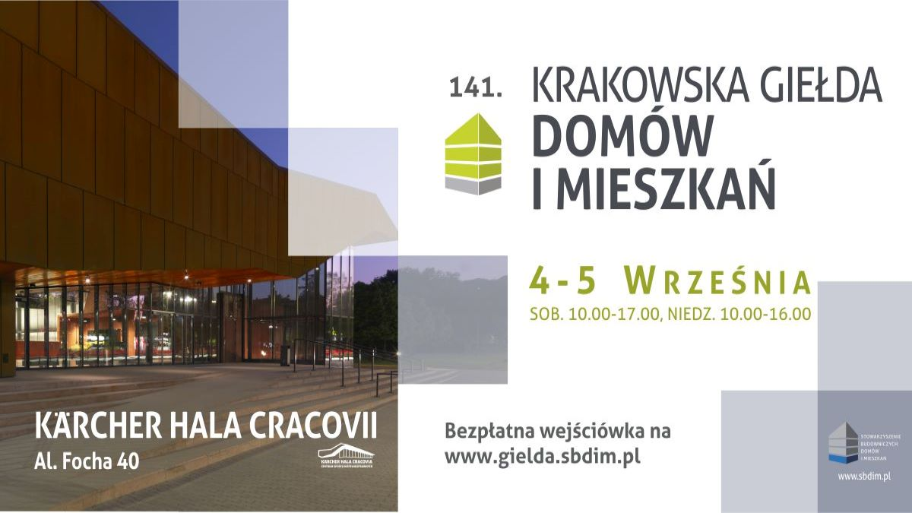

<!DOCTYPE html><html class="avada-html-layout-wide avada-html-header-position-top avada-is-100-percent-template" lang="pl-PL" prefix="og: http://ogp.me/ns# fb: http://ogp.me/ns/fb#"><head><meta http-equiv="X-UA-Compatible" content="IE=edge"><meta http-equiv="Content-Type" content="text/html; charset=utf-8"><meta name="viewport" content="width=device-width, initial-scale=1"><meta name="robots" content="index, follow, max-image-preview:large, max-snippet:-1, max-video-preview:-1"><link media="all" href="css/autoptimize_9f2a1b4a4ce4138228d020b2656daa8d.css" rel="stylesheet"><title>Adaptacja projektu, budowa domu koszty - porady dla budujƒÖcych dom</title><meta name="description" content="Budowskaz.pl to portal dla os√≥b budujƒÖcych dom. Znajdziesz tu informacje na temat budowy domu krok po kroku, koszt√≥w budowy domu energooszczƒôdnego oraz koszt√≥w uzbrojenia dzia≈Çki"><link rel="canonical" href="https://budowskaz.pl/"><meta property="og:locale" content="pl_PL"><meta property="og:type" content="website"><meta property="og:title" content="Adaptacja projektu, budowa domu koszty - porady dla budujƒÖcych dom"><meta property="og:description" content="Budowskaz.pl to portal dla os√≥b budujƒÖcych dom. Znajdziesz tu informacje na temat budowy domu krok po kroku, koszt√≥w budowy domu energooszczƒôdnego oraz koszt√≥w uzbrojenia dzia≈Çki"><meta property="og:url" content="https://budowskaz.pl/"><meta property="og:site_name" content="Budowskaz"><meta property="article:publisher" content="https://www.facebook.com/budowskaz/"><meta property="article:modified_time" content="2020-09-14T07:25:52+00:00"><meta name="twitter:card" content="summary_large_image"><meta name="twitter:label1" content="Szacowany czas czytania"><meta name="twitter:data1" content="13 minut"> <script type="application/ld+json" class="yoast-schema-graph">{"@context":"https://schema.org","@graph":[{"@type":"WebSite","@id":"https://budowskaz.pl/#website","url":"https://budowskaz.pl/","name":"Budowskaz","description":"Poradnik dla buduj\u0105cych dom","potentialAction":[{"@type":"SearchAction","target":{"@type":"EntryPoint","urlTemplate":"https://budowskaz.pl/?s={search_term_string}"},"query-input":"required name=search_term_string"}],"inLanguage":"pl-PL"},{"@type":"WebPage","@id":"https://budowskaz.pl/#webpage","url":"https://budowskaz.pl/","name":"Adaptacja projektu, budowa domu koszty - porady dla buduj\u0105cych dom","isPartOf":{"@id":"https://budowskaz.pl/#website"},"datePublished":"2015-12-04T02:08:06+00:00","dateModified":"2020-09-14T07:25:52+00:00","description":"Budowskaz.pl to portal dla os\u00f3b buduj\u0105cych dom. Znajdziesz tu informacje na temat budowy domu krok po kroku, koszt\u00f3w budowy domu energooszcz\u0119dnego oraz koszt\u00f3w uzbrojenia dzia\u0142ki","breadcrumb":{"@id":"https://budowskaz.pl/#breadcrumb"},"inLanguage":"pl-PL","potentialAction":[{"@type":"ReadAction","target":["https://budowskaz.pl/"]}]},{"@type":"BreadcrumbList","@id":"https://budowskaz.pl/#breadcrumb","itemListElement":[{"@type":"ListItem","position":1,"name":"Strona g\u0142\u00f3wna"}]}]}</script> <meta name="google-site-verification" content="ofY1fNw8oKxJPtuK41mHx9H1wvJRjpy5evQ1HAwKdig"><link href="https://fonts.gstatic.com" crossorigin="anonymous" rel="preconnect"><link rel="alternate" type="application/rss+xml" title="Budowskaz ª Kana≈Ç z wpisami" href="https://budowskaz.pl/feed/"><link rel="alternate" type="application/rss+xml" title="Budowskaz ª Kana≈Ç z komentarzami" href="https://budowskaz.pl/comments/feed/"><link rel="shortcut icon" href="images/Favicon.png" type="image/x-icon"><link rel="apple-touch-icon" href="images/Apple-iPhone-Icon.png"><link rel="apple-touch-icon" sizes="180x180" href="images/Apple-iPhone-Retina-Icon.png"><link rel="apple-touch-icon" sizes="152x152" href="images/Apple-iPhone-Icon-1.png"><link rel="apple-touch-icon" sizes="167x167" href="images/Apple-iPad-Retina-Icon_NEW.png"><meta property="og:title" content="Budowskaz"><meta property="og:type" content="article"><meta property="og:url" content="https://budowskaz.pl/"><meta property="og:site_name" content="Budowskaz"><meta property="og:description" content="Poradnik budujƒÖcego  Lokalizacja, plany, droga, media, formalno≈õci  Projekt indywidualny czy typowy, procedury  Fundamenty, mury, odwodnienie, ocieplenie, dach  Okna, okna dachowe, drzwi, bramy, rolety, ≈ºaluzje  Wentylacja, instalacja wod-kan, gaz, prƒÖd, smart dom  Elewacje, pod≈Çogi, schody, przestrze≈Ñ zewnƒôtrzna, design       TYLE MIESZKA≈É"><meta property="og:image" content="images/construction_logo_NEW.png">  <script src="js_6" type="text/javascript" data-cfasync="false" data-wpfc-render="false" async=""></script> <script type="text/javascript" data-cfasync="false" data-wpfc-render="false">var mi_version = '8.3.0';
				var mi_track_user = true;
				var mi_no_track_reason = '';
				
								var disableStrs = [
															'ga-disable-UA-13304614-11',
									];

				/* Function to detect opted out users */
				function __gtagTrackerIsOptedOut() {
					for ( var index = 0; index < disableStrs.length; index++ ) {
						if ( document.cookie.indexOf( disableStrs[ index ] + '=true' ) > -1 ) {
							return true;
						}
					}

					return false;
				}

				/* Disable tracking if the opt-out cookie exists. */
				if ( __gtagTrackerIsOptedOut() ) {
					for ( var index = 0; index < disableStrs.length; index++ ) {
						window[ disableStrs[ index ] ] = true;
					}
				}

				/* Opt-out function */
				function __gtagTrackerOptout() {
					for ( var index = 0; index < disableStrs.length; index++ ) {
						document.cookie = disableStrs[ index ] + '=true; expires=Thu, 31 Dec 2099 23:59:59 UTC; path=/';
						window[ disableStrs[ index ] ] = true;
					}
				}

				if ( 'undefined' === typeof gaOptout ) {
					function gaOptout() {
						__gtagTrackerOptout();
					}
				}
								window.dataLayer = window.dataLayer || [];

				window.MonsterInsightsDualTracker = {
					helpers: {},
					trackers: {},
				};
				if ( mi_track_user ) {
					function __gtagDataLayer() {
						dataLayer.push( arguments );
					}

					function __gtagTracker( type, name, parameters ) {
						if (!parameters) {
							parameters = {};
						}

						if (parameters.send_to) {
							__gtagDataLayer.apply( null, arguments );
							return;
						}

						if ( type === 'event' ) {
							
															parameters.send_to = monsterinsights_frontend.ua;
								__gtagDataLayer( type, name, parameters );
													} else {
							__gtagDataLayer.apply( null, arguments );
						}
					}
					__gtagTracker( 'js', new Date() );
					__gtagTracker( 'set', {
						'developer_id.dZGIzZG' : true,
											} );
															__gtagTracker( 'config', 'UA-13304614-11', {"forceSSL":"true"} );
										window.gtag = __gtagTracker;											(function () {
							/* https://developers.google.com/analytics/devguides/collection/analyticsjs/ */
							/* ga and __gaTracker compatibility shim. */
							var noopfn = function () {
								return null;
							};
							var newtracker = function () {
								return new Tracker();
							};
							var Tracker = function () {
								return null;
							};
							var p = Tracker.prototype;
							p.get = noopfn;
							p.set = noopfn;
							p.send = function (){
								var args = Array.prototype.slice.call(arguments);
								args.unshift( 'send' );
								__gaTracker.apply(null, args);
							};
							var __gaTracker = function () {
								var len = arguments.length;
								if ( len === 0 ) {
									return;
								}
								var f = arguments[len - 1];
								if ( typeof f !== 'object' || f === null || typeof f.hitCallback !== 'function' ) {
									if ( 'send' === arguments[0] ) {
										var hitConverted, hitObject = false, action;
										if ( 'event' === arguments[1] ) {
											if ( 'undefined' !== typeof arguments[3] ) {
												hitObject = {
													'eventAction': arguments[3],
													'eventCategory': arguments[2],
													'eventLabel': arguments[4],
													'value': arguments[5] ? arguments[5] : 1,
												}
											}
										}
										if ( 'pageview' === arguments[1] ) {
											if ( 'undefined' !== typeof arguments[2] ) {
												hitObject = {
													'eventAction': 'page_view',
													'page_path' : arguments[2],
												}
											}
										}
										if ( typeof arguments[2] === 'object' ) {
											hitObject = arguments[2];
										}
										if ( typeof arguments[5] === 'object' ) {
											Object.assign( hitObject, arguments[5] );
										}
										if ( 'undefined' !== typeof arguments[1].hitType ) {
											hitObject = arguments[1];
											if ( 'pageview' === hitObject.hitType ) {
												hitObject.eventAction = 'page_view';
											}
										}
										if ( hitObject ) {
											action = 'timing' === arguments[1].hitType ? 'timing_complete' : hitObject.eventAction;
											hitConverted = mapArgs( hitObject );
											__gtagTracker( 'event', action, hitConverted );
										}
									}
									return;
								}

								function mapArgs( args ) {
									var arg, hit = {};
									var gaMap = {
										'eventCategory': 'event_category',
										'eventAction': 'event_action',
										'eventLabel': 'event_label',
										'eventValue': 'event_value',
										'nonInteraction': 'non_interaction',
										'timingCategory': 'event_category',
										'timingVar': 'name',
										'timingValue': 'value',
										'timingLabel': 'event_label',
										'page' : 'page_path',
										'location' : 'page_location',
										'title' : 'page_title',
									};
									for ( arg in args ) {
																				if ( ! ( ! args.hasOwnProperty(arg) || ! gaMap.hasOwnProperty(arg) ) ) {
											hit[gaMap[arg]] = args[arg];
										} else {
											hit[arg] = args[arg];
										}
									}
									return hit;
								}

								try {
									f.hitCallback();
								} catch ( ex ) {
								}
							};
							__gaTracker.create = newtracker;
							__gaTracker.getByName = newtracker;
							__gaTracker.getAll = function () {
								return [];
							};
							__gaTracker.remove = noopfn;
							__gaTracker.loaded = true;
							window['__gaTracker'] = __gaTracker;
						})();
									} else {
										console.log( "" );
					( function () {
							function __gtagTracker() {
								return null;
							}
							window['__gtagTracker'] = __gtagTracker;
							window['gtag'] = __gtagTracker;
					} )();
									}</script> <link rel="stylesheet" id="fusion-dynamic-css-css" href="css/04bab5085d0cf139fdaabb00e76cf594.min.css" type="text/css" media="all"> <script type="text/javascript" id="layerslider-greensock-js-extra">var LS_Meta = {"v":"6.6.5"};</script> <script type="text/javascript" data-cfasync="false" src="js/autoptimize_single_150324e55a09a90e1eface0a7faed270.js" id="layerslider-greensock-js"></script> <script type="text/javascript" src="js/jquery.min_5.js" id="jquery-core-js"></script> <script type="text/javascript" data-cfasync="false" src="js/autoptimize_single_9910a307b810cfd5e590a49df594a17a.js" id="layerslider-js"></script> <script type="text/javascript" data-cfasync="false" src="js/autoptimize_single_ab5c641341135bae9cde257a14da0656.js" id="layerslider-transitions-js"></script> <script type="text/javascript" id="monsterinsights-frontend-script-js-extra">var monsterinsights_frontend = {"js_events_tracking":"true","download_extensions":"doc,pdf,ppt,zip,xls,docx,pptx,xlsx","inbound_paths":"[]","home_url":"https:\/\/budowskaz.pl","hash_tracking":"false","ua":"UA-13304614-11","v4_id":""};</script> <meta name="generator" content="Powered by LayerSlider 6.6.5 - Multi-Purpose, Responsive, Parallax, Mobile-Friendly Slider Plugin for WordPress."><link rel="https://api.w.org/" href="https://budowskaz.pl/wp-json/"><link rel="alternate" type="application/json" href="https://budowskaz.pl/wp-json/wp/v2/pages/5"><link rel="EditURI" type="application/rsd+xml" title="RSD" href="https://budowskaz.pl/xmlrpc.php?rsd"><link rel="wlwmanifest" type="application/wlwmanifest+xml" href="https://budowskaz.pl/wp-includes/wlwmanifest.xml"><meta name="generator" content="WordPress 5.8.4"><link rel="shortlink" href="https://budowskaz.pl/"><link rel="alternate" type="application/json+oembed" href="https://budowskaz.pl/wp-json/oembed/1.0/embed?url=https%3A%2F%2Fbudowskaz.pl%2F"><link rel="alternate" type="text/xml+oembed" href="https://budowskaz.pl/wp-json/oembed/1.0/embed?url=https%3A%2F%2Fbudowskaz.pl%2F&amp;format=xml">  <script async="" src="js_6"></script> <script>window.dataLayer = window.dataLayer || [];
  function gtag(){dataLayer.push(arguments);}
  gtag('js', new Date());

  gtag('config', 'UA-13304614-11');</script>  <script type="text/javascript">(function(url){
	if(/(?:Chrome\/26\.0\.1410\.63 Safari\/537\.31|WordfenceTestMonBot)/.test(navigator.userAgent)){ return; }
	var addEvent = function(evt, handler) {
		if (window.addEventListener) {
			document.addEventListener(evt, handler, false);
		} else if (window.attachEvent) {
			document.attachEvent('on' + evt, handler);
		}
	};
	var removeEvent = function(evt, handler) {
		if (window.removeEventListener) {
			document.removeEventListener(evt, handler, false);
		} else if (window.detachEvent) {
			document.detachEvent('on' + evt, handler);
		}
	};
	var evts = 'contextmenu dblclick drag dragend dragenter dragleave dragover dragstart drop keydown keypress keyup mousedown mousemove mouseout mouseover mouseup mousewheel scroll'.split(' ');
	var logHuman = function() {
		if (window.wfLogHumanRan) { return; }
		window.wfLogHumanRan = true;
		var wfscr = document.createElement('script');
		wfscr.type = 'text/javascript';
		wfscr.async = true;
		wfscr.src = url + '&r=' + Math.random();
		(document.getElementsByTagName('head')[0]||document.getElementsByTagName('body')[0]).appendChild(wfscr);
		for (var i = 0; i < evts.length; i++) {
			removeEvent(evts[i], logHuman);
		}
	};
	for (var i = 0; i < evts.length; i++) {
		addEvent(evts[i], logHuman);
	}
})('//budowskaz.pl/?wordfence_lh=1&hid=054EC587473FA2A45CAB7196E7A12059');</script><meta name="generator" content="Powered by Slider Revolution 5.4.6.4 - responsive, Mobile-Friendly Slider Plugin for WordPress with comfortable drag and drop interface."><link rel="icon" href="images/cropped-Apple-iPad-Retina-Icon_NEW-32x32.png" sizes="32x32"><link rel="icon" href="images/cropped-Apple-iPad-Retina-Icon_NEW-192x192.png" sizes="192x192"><link rel="apple-touch-icon" href="images/cropped-Apple-iPad-Retina-Icon_NEW-180x180.png"><meta name="msapplication-TileImage" content="https://budowskaz.pl/wp-content/uploads/2018/03/cropped-Apple-iPad-Retina-Icon_NEW-270x270.png"> <script type="text/javascript">function setREVStartSize(e){
				try{ var i=jQuery(window).width(),t=9999,r=0,n=0,l=0,f=0,s=0,h=0;					
					if(e.responsiveLevels&&(jQuery.each(e.responsiveLevels,function(e,f){f>i&&(t=r=f,l=e),i>f&&f>r&&(r=f,n=e)}),t>r&&(l=n)),f=e.gridheight[l]||e.gridheight[0]||e.gridheight,s=e.gridwidth[l]||e.gridwidth[0]||e.gridwidth,h=i/s,h=h>1?1:h,f=Math.round(h*f),"fullscreen"==e.sliderLayout){var u=(e.c.width(),jQuery(window).height());if(void 0!=e.fullScreenOffsetContainer){var c=e.fullScreenOffsetContainer.split(",");if (c) jQuery.each(c,function(e,i){u=jQuery(i).length>0?u-jQuery(i).outerHeight(!0):u}),e.fullScreenOffset.split("%").length>1&&void 0!=e.fullScreenOffset&&e.fullScreenOffset.length>0?u-=jQuery(window).height()*parseInt(e.fullScreenOffset,0)/100:void 0!=e.fullScreenOffset&&e.fullScreenOffset.length>0&&(u-=parseInt(e.fullScreenOffset,0))}f=u}else void 0!=e.minHeight&&f<e.minHeight&&(f=e.minHeight);e.c.closest(".rev_slider_wrapper").css({height:f})					
				}catch(d){console.log("Failure at Presize of Slider:"+d)}
			};</script> <script type="text/javascript">var doc = document.documentElement;
			doc.setAttribute( 'data-useragent', navigator.userAgent );</script> </head><body class="home page-template page-template-100-width page-template-100-width-php page page-id-5 fusion-image-hovers fusion-pagination-sizing fusion-button_type-flat fusion-button_span-no fusion-button_gradient-linear avada-image-rollover-circle-yes avada-image-rollover-yes avada-image-rollover-direction-center_vertical cookies-not-set fusion-body ltr fusion-sticky-header no-tablet-sticky-header no-mobile-sticky-header avada-has-rev-slider-styles fusion-disable-outline fusion-sub-menu-fade mobile-logo-pos-left layout-wide-mode avada-has-boxed-modal-shadow-none layout-scroll-offset-full avada-has-zero-margin-offset-top fusion-top-header menu-text-align-center mobile-menu-design-modern fusion-show-pagination-text fusion-header-layout-v1 avada-responsive avada-footer-fx-none avada-menu-highlight-style-arrow fusion-search-form-clean fusion-main-menu-search-overlay fusion-avatar-circle avada-dropdown-styles avada-blog-layout-large avada-blog-archive-layout-grid avada-header-shadow-no avada-menu-icon-position-left avada-has-megamenu-shadow avada-has-mainmenu-dropdown-divider avada-has-pagetitle-bg-full avada-has-main-nav-search-icon avada-has-100-footer avada-has-breadcrumb-mobile-hidden avada-has-titlebar-hide avada-social-full-transparent avada-has-pagination-padding avada-flyout-menu-direction-fade avada-ec-views-v1"> <a class="skip-link screen-reader-text" href="#content">Przejdź do zawartości</a><div id="boxed-wrapper"><div class="fusion-sides-frame"></div><div id="wrapper" class="fusion-wrapper"><div id="home" style="position:relative;top:-1px;"></div><header class="fusion-header-wrapper"><div class="fusion-header-v1 fusion-logo-alignment fusion-logo-left fusion-sticky-menu- fusion-sticky-logo- fusion-mobile-logo-1  fusion-mobile-menu-design-modern"><div class="fusion-header-sticky-height"></div><div class="fusion-header"><div class="fusion-row"><div class="fusion-logo" data-margin-top="31px" data-margin-bottom="31px" data-margin-left="0px" data-margin-right="0px"> <a class="fusion-logo-link" href="https://budowskaz.pl/">   </a></div><nav class="fusion-main-menu" aria-label="Main Menu"><div class="fusion-overlay-search"><form role="search" class="searchform fusion-search-form  fusion-search-form-clean" method="get" action="https://budowskaz.pl/"><div class="fusion-search-form-content"><div class="fusion-search-field search-field"> <label><span class="screen-reader-text">Szukaj</span> <input type="search" value="" name="s" class="s" placeholder="Szukaj..." required="" aria-required="true" aria-label="Szukaj..."> </label></div><div class="fusion-search-button search-button"> <input type="submit" class="fusion-search-submit searchsubmit" aria-label="Szukaj" value=""></div></div></form><div class="fusion-search-spacer"></div><a href="#" role="button" aria-label="Close Search" class="fusion-close-search"></a></div><ul id="menu-construction-main-menu" class="fusion-menu"><li id="menu-item-1781" class="menu-item menu-item-type-custom menu-item-object-custom menu-item-1781" data-item-id="1781"><a href="http://budowskaz.pl/aktualnosci" class="fusion-arrow-highlight"><span class="menu-text">AKTUALNOŚCI<span class="fusion-arrow-svg"><svg height="12px" width="23px"> <path d="M0 0 L11.5 12 L23 0 Z" fill="#ffffff"></path> </svg></span></span></a></li><li id="menu-item-1646" class="menu-item menu-item-type-custom menu-item-object-custom menu-item-has-children menu-item-1646 fusion-dropdown-menu" data-item-id="1646"><a class="fusion-arrow-highlight"><span class="menu-text">PORADNIK<span class="fusion-arrow-svg"><svg height="12px" width="23px"> <path d="M0 0 L11.5 12 L23 0 Z" fill="#ffffff"></path> </svg></span><span class="fusion-dropdown-svg"><svg height="12px" width="23px"> <path d="M0 12 L11.5 0 L23 12 Z" fill="#ffffff"></path> </svg></span></span></a><ul class="sub-menu"><li id="menu-item-1592" class="menu-item menu-item-type-custom menu-item-object-custom menu-item-1592 fusion-dropdown-submenu"><a href="http://www.budowskaz.pl/dzialka" class="fusion-arrow-highlight"><span>DZIAŁKA</span></a></li><li id="menu-item-1593" class="menu-item menu-item-type-custom menu-item-object-custom menu-item-1593 fusion-dropdown-submenu"><a href="http://www.budowskaz.pl/projekt" class="fusion-arrow-highlight"><span>PROJEKT</span></a></li><li id="menu-item-1594" class="menu-item menu-item-type-custom menu-item-object-custom menu-item-1594 fusion-dropdown-submenu"><a href="http://www.budowskaz.pl/stan_surowy" class="fusion-arrow-highlight"><span>STAN SUROWY</span></a></li><li id="menu-item-1595" class="menu-item menu-item-type-custom menu-item-object-custom menu-item-1595 fusion-dropdown-submenu"><a href="http://www.budowskaz.pl/stolarka" class="fusion-arrow-highlight"><span>STOLARKA</span></a></li><li id="menu-item-1596" class="menu-item menu-item-type-custom menu-item-object-custom menu-item-1596 fusion-dropdown-submenu"><a href="http://www.budowskaz.pl/instalacje" class="fusion-arrow-highlight"><span>INSTALACJE</span></a></li><li id="menu-item-1597" class="menu-item menu-item-type-custom menu-item-object-custom menu-item-1597 fusion-dropdown-submenu"><a href="http://www.budowskaz.pl/wykonczenie" class="fusion-arrow-highlight"><span>WYKOŃCZENIE</span></a></li></ul></li><li id="menu-item-1780" class="menu-item menu-item-type-custom menu-item-object-custom menu-item-1780" data-item-id="1780"><a href="http://budowskaz.pl/eko/" class="fusion-arrow-highlight"><span class="menu-text">EKO<span class="fusion-arrow-svg"><svg height="12px" width="23px"> <path d="M0 0 L11.5 12 L23 0 Z" fill="#ffffff"></path> </svg></span></span></a></li><li id="menu-item-2104" class="menu-item menu-item-type-custom menu-item-object-custom menu-item-2104" data-item-id="2104"><a href="http://budowskaz.pl/finanse/" class="fusion-arrow-highlight"><span class="menu-text">FINANSE<span class="fusion-arrow-svg"><svg height="12px" width="23px"> <path d="M0 0 L11.5 12 L23 0 Z" fill="#ffffff"></path> </svg></span></span></a></li><li class="fusion-custom-menu-item fusion-main-menu-search fusion-search-overlay"><a class="fusion-main-menu-icon" href="#" aria-label="Szukaj" data-title="Szukaj" title="Szukaj" role="button" aria-expanded="false"></a></li></ul></nav><div class="fusion-mobile-menu-icons"> <a href="#" class="fusion-icon awb-icon-bars" aria-label="Toggle mobile menu" aria-expanded="false"></a></div><nav class="fusion-mobile-nav-holder fusion-mobile-menu-text-align-left" aria-label="Main Menu Mobile"></nav></div></div></div><div class="fusion-clearfix"></div></header><div id="sliders-container" class="fusion-slider-visibility"><div id="rev_slider_2_1_wrapper" class="rev_slider_wrapper fullwidthbanner-container" data-source="gallery" style="margin:0px auto;background:transparent;padding:0px;margin-top:0px;margin-bottom:0px;"><div id="rev_slider_2_1" class="rev_slider fullwidthabanner" style="display:none;" data-version="5.4.6.4"><ul><li data-index="rs-22" data-transition="fade" data-slotamount="default" data-hideafterloop="0" data-hideslideonmobile="off" data-easein="default" data-easeout="default" data-masterspeed="300" data-link="https://realizacje.excellent.com.pl/" data-target="_blank" data-rotate="0" data-saveperformance="off" data-title="Excellent_01" data-param1="" data-param2="" data-param3="" data-param4="" data-param5="" data-param6="" data-param7="" data-param8="" data-param9="" data-param10="" data-description=""> <div class="tp-caption   tp-resizeme" id="slide-22-layer-13" data-x="" data-y="" data-width="['none','none','none','none']" data-height="['none','none','none','none']" data-type="image" data-responsive_offset="on" data-frames="[{&quot;delay&quot;:10,&quot;speed&quot;:500,&quot;frame&quot;:&quot;0&quot;,&quot;from&quot;:&quot;opacity:0;&quot;,&quot;to&quot;:&quot;o:1;&quot;,&quot;ease&quot;:&quot;Power3.easeInOut&quot;},{&quot;delay&quot;:&quot;wait&quot;,&quot;speed&quot;:300,&quot;frame&quot;:&quot;999&quot;,&quot;to&quot;:&quot;opacity:0;&quot;,&quot;ease&quot;:&quot;Power3.easeInOut&quot;}]" data-textalign="['inherit','inherit','inherit','inherit']" data-paddingtop="[0,0,0,0]" data-paddingright="[0,0,0,0]" data-paddingbottom="[0,0,0,0]" data-paddingleft="[0,0,0,0]" style="z-index: 5;"></div><div class="tp-caption   tp-resizeme" id="slide-22-layer-15" data-x="right" data-hoffset="" data-y="" data-width="['none','none','none','none']" data-height="['none','none','none','none']" data-type="image" data-responsive_offset="on" data-frames="[{&quot;delay&quot;:380,&quot;speed&quot;:1220,&quot;frame&quot;:&quot;0&quot;,&quot;from&quot;:&quot;x:right;&quot;,&quot;to&quot;:&quot;o:1;&quot;,&quot;ease&quot;:&quot;Power3.easeInOut&quot;},{&quot;delay&quot;:&quot;wait&quot;,&quot;speed&quot;:300,&quot;frame&quot;:&quot;999&quot;,&quot;to&quot;:&quot;opacity:0;&quot;,&quot;ease&quot;:&quot;Power3.easeInOut&quot;}]" data-textalign="['inherit','inherit','inherit','inherit']" data-paddingtop="[0,0,0,0]" data-paddingright="[0,0,0,0]" data-paddingbottom="[0,0,0,0]" data-paddingleft="[0,0,0,0]" style="z-index: 7;"></div><div class="tp-caption   tp-resizeme" id="slide-22-layer-16" data-x="right" data-hoffset="" data-y="367" data-width="['none','none','none','none']" data-height="['none','none','none','none']" data-type="image" data-responsive_offset="on" data-frames="[{&quot;delay&quot;:1510,&quot;speed&quot;:3000,&quot;frame&quot;:&quot;0&quot;,&quot;from&quot;:&quot;x:right;&quot;,&quot;to&quot;:&quot;o:1;&quot;,&quot;ease&quot;:&quot;Power3.easeInOut&quot;},{&quot;delay&quot;:&quot;wait&quot;,&quot;speed&quot;:300,&quot;frame&quot;:&quot;999&quot;,&quot;to&quot;:&quot;opacity:0;&quot;,&quot;ease&quot;:&quot;Power3.easeInOut&quot;}]" data-textalign="['inherit','inherit','inherit','inherit']" data-paddingtop="[0,0,0,0]" data-paddingright="[0,0,0,0]" data-paddingbottom="[0,0,0,0]" data-paddingleft="[0,0,0,0]" style="z-index: 8;"></div><div class="tp-caption   tp-resizeme" id="slide-22-layer-17" data-x="97" data-y="27" data-width="['none','none','none','none']" data-height="['none','none','none','none']" data-type="image" data-responsive_offset="on" data-frames="[{&quot;delay&quot;:350,&quot;speed&quot;:1250,&quot;frame&quot;:&quot;0&quot;,&quot;from&quot;:&quot;opacity:0;&quot;,&quot;to&quot;:&quot;o:1;&quot;,&quot;ease&quot;:&quot;Power3.easeInOut&quot;},{&quot;delay&quot;:&quot;wait&quot;,&quot;speed&quot;:300,&quot;frame&quot;:&quot;999&quot;,&quot;to&quot;:&quot;opacity:0;&quot;,&quot;ease&quot;:&quot;Power3.easeInOut&quot;}]" data-textalign="['inherit','inherit','inherit','inherit']" data-paddingtop="[0,0,0,0]" data-paddingright="[0,0,0,0]" data-paddingbottom="[0,0,0,0]" data-paddingleft="[0,0,0,0]" style="z-index: 9;"></div></li><li data-index="rs-14" data-transition="fade" data-slotamount="default" data-hideafterloop="0" data-hideslideonmobile="off" data-easein="default" data-easeout="default" data-masterspeed="500" data-link="https://deccoria.pl" data-target="_blank" data-rotate="0" data-saveperformance="off" data-title="Deccoria_01" data-param1="" data-param2="" data-param3="" data-param4="" data-param5="" data-param6="" data-param7="" data-param8="" data-param9="" data-param10="" data-description=""> <div class="tp-caption   tp-resizeme" id="slide-14-layer-17" data-x="" data-y="" data-width="['none','none','none','none']" data-height="['none','none','none','none']" data-type="image" data-responsive_offset="on" data-frames="[{&quot;delay&quot;:30,&quot;speed&quot;:1500,&quot;frame&quot;:&quot;0&quot;,&quot;from&quot;:&quot;opacity:0;&quot;,&quot;to&quot;:&quot;o:1;&quot;,&quot;ease&quot;:&quot;Power3.easeInOut&quot;},{&quot;delay&quot;:&quot;wait&quot;,&quot;speed&quot;:300,&quot;frame&quot;:&quot;999&quot;,&quot;to&quot;:&quot;opacity:0;&quot;,&quot;ease&quot;:&quot;Power3.easeInOut&quot;}]" data-textalign="['inherit','inherit','inherit','inherit']" data-paddingtop="[0,0,0,0]" data-paddingright="[0,0,0,0]" data-paddingbottom="[0,0,0,0]" data-paddingleft="[0,0,0,0]" style="z-index: 5;"></div><div class="tp-caption   tp-resizeme" id="slide-14-layer-18" data-x="right" data-hoffset="" data-y="" data-width="['none','none','none','none']" data-height="['none','none','none','none']" data-type="image" data-responsive_offset="on" data-frames="[{&quot;delay&quot;:1540,&quot;speed&quot;:2500,&quot;frame&quot;:&quot;0&quot;,&quot;from&quot;:&quot;x:left;&quot;,&quot;to&quot;:&quot;o:1;&quot;,&quot;ease&quot;:&quot;Power3.easeInOut&quot;},{&quot;delay&quot;:&quot;wait&quot;,&quot;speed&quot;:300,&quot;frame&quot;:&quot;999&quot;,&quot;to&quot;:&quot;opacity:0;&quot;,&quot;ease&quot;:&quot;Power3.easeInOut&quot;}]" data-textalign="['inherit','inherit','inherit','inherit']" data-paddingtop="[0,0,0,0]" data-paddingright="[0,0,0,0]" data-paddingbottom="[0,0,0,0]" data-paddingleft="[0,0,0,0]" style="z-index: 6;"></div><div class="tp-caption   tp-resizeme" id="slide-14-layer-25" data-x="right" data-hoffset="" data-y="bottom" data-voffset="" data-width="['none','none','none','none']" data-height="['none','none','none','none']" data-type="image" data-responsive_offset="on" data-frames="[{&quot;delay&quot;:4280,&quot;speed&quot;:2000,&quot;frame&quot;:&quot;0&quot;,&quot;from&quot;:&quot;z:0;rX:0;rY:0;rZ:0;sX:0.9;sY:0.9;skX:0;skY:0;opacity:0;&quot;,&quot;to&quot;:&quot;o:1;&quot;,&quot;ease&quot;:&quot;Power3.easeInOut&quot;},{&quot;delay&quot;:&quot;wait&quot;,&quot;speed&quot;:300,&quot;frame&quot;:&quot;999&quot;,&quot;to&quot;:&quot;opacity:0;&quot;,&quot;ease&quot;:&quot;Power3.easeInOut&quot;}]" data-textalign="['inherit','inherit','inherit','inherit']" data-paddingtop="[0,0,0,0]" data-paddingright="[0,0,0,0]" data-paddingbottom="[0,0,0,0]" data-paddingleft="[0,0,0,0]" style="z-index: 7;"></div></li></ul><div class="tp-bannertimer tp-bottom" style="visibility: hidden !important;"></div></div> <script>var htmlDiv = document.getElementById("rs-plugin-settings-inline-css"); var htmlDivCss="";
				if(htmlDiv) {
					htmlDiv.innerHTML = htmlDiv.innerHTML + htmlDivCss;
				}else{
					var htmlDiv = document.createElement("div");
					htmlDiv.innerHTML = "<style>" + htmlDivCss + "</style>";
					document.getElementsByTagName("head")[0].appendChild(htmlDiv.childNodes[0]);
				}</script> <script type="text/javascript">setREVStartSize({c: jQuery('#rev_slider_2_1'), gridwidth: [1263], gridheight: [480], sliderLayout: 'fullwidth'});
			
var revapi2,
	tpj=jQuery;
			
tpj(document).ready(function() {
	if(tpj("#rev_slider_2_1").revolution == undefined){
		revslider_showDoubleJqueryError("#rev_slider_2_1");
	}else{
		revapi2 = tpj("#rev_slider_2_1").show().revolution({
			sliderType:"carousel",
			jsFileLocation:"//budowskaz.pl/wp-content/plugins/revslider/public/assets/js/",
			sliderLayout:"fullwidth",
			dottedOverlay:"none",
			delay:9000,
			navigation: {
				keyboardNavigation:"off",
				keyboard_direction: "horizontal",
				mouseScrollNavigation:"off",
 							mouseScrollReverse:"default",
				onHoverStop:"off",
				touch:{
					touchenabled:"on",
					touchOnDesktop:"off",
					swipe_threshold: 75,
					swipe_min_touches: 50,
					swipe_direction: "horizontal",
					drag_block_vertical: false
				}
			},
			carousel: {
				horizontal_align: "center",
				vertical_align: "center",
				fadeout: "on",
				vary_fade: "off",
				maxVisibleItems: 3,
				infinity: "off",
				space: 0,
				stretch: "off",
 							showLayersAllTime: "off",
 							easing: "Power3.easeInOut",
 							speed: "800"
			},
			visibilityLevels:[1024,1140,778,480],
			gridwidth:1263,
			gridheight:480,
			lazyType:"smart",
			parallax: {
				type:"mouse",
				origo:"slidercenter",
				speed:2000,
				speedbg:0,
				speedls:0,
				levels:[2,3,4,5,6,7,12,16,10,50,47,48,49,50,51,55],
			},
			shadow:0,
			spinner:"off",
			stopLoop:"off",
			stopAfterLoops:-1,
			stopAtSlide:-1,
			shuffle:"off",
			autoHeight:"off",
			disableProgressBar:"on",
			hideThumbsOnMobile:"on",
			hideSliderAtLimit:0,
			hideCaptionAtLimit:0,
			hideAllCaptionAtLilmit:0,
			debugMode:false,
			fallbacks: {
				simplifyAll:"off",
				nextSlideOnWindowFocus:"off",
				disableFocusListener:false,
			}
		});
	}
	
});	/*ready*/</script> </div></div><main id="main" class="clearfix width-100"><div class="fusion-row" style="max-width:100%;"><section id="content" class="full-width"><div id="post-5" class="post-5 page type-page status-publish hentry"> <span class="entry-title rich-snippet-hidden">Budowskaz</span><span class="vcard rich-snippet-hidden"><span class="fn"><a href="https://budowskaz.pl/author/jakubowska/" title="Wpisy od jakubowska" rel="author">jakubowska</a></span></span><span class="updated rich-snippet-hidden">2020-09-14T09:25:52+02:00</span><div class="post-content"><div class="fusion-fullwidth fullwidth-box fusion-builder-row-1 nonhundred-percent-fullwidth non-hundred-percent-height-scrolling" style="background-color: #fed03d;background-position: left top;background-repeat: no-repeat;padding-top:20px;padding-right:30px;padding-bottom:0px;padding-left:30px;margin-bottom: 0px;margin-top: 0px;border-width: 0px 0px 0px 0px;border-color:#eae9e9;border-style:solid;"><div class="fusion-builder-row fusion-row"><div class="fusion-layout-column fusion_builder_column fusion-builder-column-0 fusion_builder_column_1_1 1_1 fusion-one-full fusion-column-first fusion-column-last" style="margin-top:0px;margin-bottom:0px;"><div class="fusion-column-wrapper fusion-flex-column-wrapper-legacy" style="background-position:left top;background-repeat:no-repeat;-webkit-background-size:cover;-moz-background-size:cover;-o-background-size:cover;background-size:cover;padding: 0px 0px 0px 0px;"><div class="fusion-clearfix"></div></div></div></div></div><div class="fusion-fullwidth fullwidth-box fusion-builder-row-2 mass-responsive-section nonhundred-percent-fullwidth non-hundred-percent-height-scrolling" style="background-color: rgba(255,255,255,0);background-position: left top;background-repeat: no-repeat;padding-top:10px;padding-right:30px;padding-bottom:10px;padding-left:30px;margin-bottom: 0px;margin-top: 0px;border-width: 0px 0px 0px 0px;border-color:#eae9e9;border-style:solid;" id="section1"><div class="fusion-builder-row fusion-row"><div class="fusion-layout-column fusion_builder_column fusion-builder-column-1 fusion_builder_column_1_1 1_1 fusion-one-full fusion-column-first fusion-column-last mass-intro" style="margin-top:42px;margin-bottom:20px;"><div class="fusion-column-wrapper fusion-flex-column-wrapper-legacy" style="background-position:left top;background-repeat:no-repeat;-webkit-background-size:cover;-moz-background-size:cover;-o-background-size:cover;background-size:cover;padding: 0px 15% 0px 15%;"><div class="fusion-text fusion-text-1"><h2 style="text-align: center;">Poradnik budujƒÖcego</h2></div><div class="fusion-sep-clear"></div><div class="fusion-separator" style="margin-left: auto;margin-right: auto;margin-top:0px;margin-bottom:10px;width:100%;max-width:206px;"><div class="fusion-separator-border sep-single sep-solid" style="border-color:#fed03d;border-top-width:2px;"></div></div><div class="fusion-sep-clear"></div><div class="fusion-clearfix"></div></div></div></div></div><div class="fusion-fullwidth fullwidth-box fusion-builder-row-3 hundred-percent-fullwidth non-hundred-percent-height-scrolling fusion-equal-height-columns" style="background-color: rgba(255,255,255,0);background-position: right center;background-repeat: no-repeat;padding-top:0px;padding-right:8%;padding-bottom:30px;padding-left:8%;margin-bottom: 0px;margin-top: 0px;border-width: 0px 0px 0px 0px;border-color:#eae9e9;border-style:solid;"><div class="fusion-builder-row fusion-row"><div class="fusion-layout-column fusion_builder_column fusion-builder-column-2 fusion_builder_column_1_1 1_1 fusion-one-full fusion-column-first fusion-column-last" style="margin-top:0px;margin-bottom:0px;"><div class="fusion-column-wrapper fusion-flex-column-wrapper-legacy" style="background-position:left top;background-repeat:no-repeat;-webkit-background-size:cover;-moz-background-size:cover;-o-background-size:cover;background-size:cover;padding: 0px 0px 0px 0px;"><div class="fusion-content-boxes content-boxes columns row fusion-columns-3 fusion-columns-total-3 fusion-content-boxes-1 content-boxes-icon-on-top content-left" data-animationoffset="top-into-view" style="margin-top:0px;margin-bottom:0px;"><div class="fusion-column content-box-column content-box-column content-box-column-1 col-lg-4 col-md-4 col-sm-4 fusion-content-box-hover content-box-column-first-in-row"><div class="col content-box-wrapper content-wrapper-background link-area-link-icon link-type-text content-icon-wrapper-yes icon-wrapper-hover-animation-pulsate fusion-animated" style="background-color:#eae9e9;" data-animationtype="slideInLeft" data-animationduration="0.3" data-animationoffset="top-into-view"><div class="heading heading-with-icon icon-left"><a class="heading-link" href="http://budowskaz.pl/dzialka/" target="_self"><div class="icon"><span style="height:114px;width:114px;line-height:59px;border-color:rgba(0,0,0,0);border-width:6px;border-style:solid;background-color:#333333;box-sizing:content-box;border-radius:50%;"><i style="border-color:#333333;border-width:2px;background-color:#333333;box-sizing:content-box;height:110px;width:110px;line-height:110px;border-radius:50%;position:relative;top:auto;left:auto;margin:0;border-radius:50%;color:#ffffff;font-size:55px;" aria-hidden="true" class="fontawesome-icon fa fa-home circle-yes fa-flip-horizontal fa-rotate-180"></i></span></div><h2 class="content-box-heading fusion-responsive-typography-calculated" style="font-size:32px;--fontSize:32;line-height:1.31;">Dzia≈Çka</h2></a></div><div class="fusion-clearfix"></div><div class="content-container" style="color:#747474;"><p>Lokalizacja, plany, droga, media, formalno≈õci</p></div></div></div><div class="fusion-column content-box-column content-box-column content-box-column-2 col-lg-4 col-md-4 col-sm-4 fusion-content-box-hover "><div class="col content-box-wrapper content-wrapper-background link-area-link-icon link-type-text content-icon-wrapper-yes icon-wrapper-hover-animation-pulsate fusion-animated" style="background-color:#eae9e9;" data-animationtype="slideInLeft" data-animationduration="0.3" data-animationoffset="top-into-view"><div class="heading heading-with-icon icon-left"><a class="heading-link" href="http://budowskaz.pl/projekt/" target="_self"><div class="icon"><span style="height:114px;width:114px;line-height:59px;border-color:rgba(0,0,0,0);border-width:6px;border-style:solid;background-color:#333333;box-sizing:content-box;border-radius:50%;"><i style="border-color:#333333;border-width:2px;background-color:#333333;box-sizing:content-box;height:110px;width:110px;line-height:110px;border-radius:50%;position:relative;top:auto;left:auto;margin:0;border-radius:50%;color:#ffffff;font-size:55px;" aria-hidden="true" class="fontawesome-icon fa fa-home circle-yes fa-flip-horizontal fa-rotate-180"></i></span></div><h2 class="content-box-heading fusion-responsive-typography-calculated" style="font-size:32px;--fontSize:32;line-height:1.31;">Projekt</h2></a></div><div class="fusion-clearfix"></div><div class="content-container" style="color:#747474;"><p>Projekt indywidualny czy typowy, procedury</p></div></div></div><div class="fusion-column content-box-column content-box-column content-box-column-3 col-lg-4 col-md-4 col-sm-4 fusion-content-box-hover content-box-column-last content-box-column-last-in-row"><div class="col content-box-wrapper content-wrapper-background link-area-link-icon link-type-text content-icon-wrapper-yes icon-wrapper-hover-animation-pulsate fusion-animated" style="background-color:#eae9e9;" data-animationtype="slideInLeft" data-animationduration="0.3" data-animationoffset="top-into-view"><div class="heading heading-with-icon icon-left"><a class="heading-link" href="www.budowskaz.pl/stan_surowy" target="_self"><div class="icon"><span style="height:114px;width:114px;line-height:59px;border-color:rgba(0,0,0,0);border-width:6px;border-style:solid;background-color:#333333;box-sizing:content-box;border-radius:50%;"><i style="border-color:#333333;border-width:2px;background-color:#333333;box-sizing:content-box;height:110px;width:110px;line-height:110px;border-radius:50%;position:relative;top:auto;left:auto;margin:0;border-radius:50%;color:#ffffff;font-size:55px;" aria-hidden="true" class="fontawesome-icon fa fa-home circle-yes fa-flip-horizontal fa-rotate-180"></i></span></div><h2 class="content-box-heading fusion-responsive-typography-calculated" style="font-size:32px;--fontSize:32;line-height:1.31;">Stan surowy</h2></a></div><div class="fusion-clearfix"></div><div class="content-container" style="color:#747474;"><p>Fundamenty, mury, odwodnienie, ocieplenie, dach</p></div></div></div><div class="fusion-clearfix"></div></div><div class="fusion-content-boxes content-boxes columns row fusion-columns-3 fusion-columns-total-3 fusion-content-boxes-2 content-boxes-icon-on-top content-left" data-animationoffset="top-into-view" style="margin-top:0px;margin-bottom:0px;"><div class="fusion-column content-box-column content-box-column content-box-column-1 col-lg-4 col-md-4 col-sm-4 fusion-content-box-hover content-box-column-first-in-row"><div class="col content-box-wrapper content-wrapper-background link-area-link-icon link-type-text content-icon-wrapper-yes icon-wrapper-hover-animation-pulsate fusion-animated" style="background-color:#eae9e9;" data-animationtype="slideInLeft" data-animationduration="0.3" data-animationoffset="top-into-view"><div class="heading heading-with-icon icon-left"><a class="heading-link" href="www.budowska.kgm.pl/stolarka" target="_self"><div class="icon"><span style="height:114px;width:114px;line-height:59px;border-color:rgba(0,0,0,0);border-width:6px;border-style:solid;background-color:#333333;box-sizing:content-box;border-radius:50%;"><i style="border-color:#333333;border-width:2px;background-color:#333333;box-sizing:content-box;height:110px;width:110px;line-height:110px;border-radius:50%;position:relative;top:auto;left:auto;margin:0;border-radius:50%;color:#ffffff;font-size:55px;" aria-hidden="true" class="fontawesome-icon fa fa-home circle-yes fa-flip-horizontal fa-rotate-180"></i></span></div><h2 class="content-box-heading fusion-responsive-typography-calculated" style="font-size:32px;--fontSize:32;line-height:1.31;">Stolarka</h2></a></div><div class="fusion-clearfix"></div><div class="content-container" style="color:#747474;"><p>Okna, okna dachowe, drzwi, bramy, rolety, ≈ºaluzje</p></div></div></div><div class="fusion-column content-box-column content-box-column content-box-column-2 col-lg-4 col-md-4 col-sm-4 fusion-content-box-hover "><div class="col content-box-wrapper content-wrapper-background link-area-link-icon link-type-text content-icon-wrapper-yes icon-wrapper-hover-animation-pulsate fusion-animated" style="background-color:#eae9e9;" data-animationtype="slideInLeft" data-animationduration="0.3" data-animationoffset="top-into-view"><div class="heading heading-with-icon icon-left"><a class="heading-link" href="www.budowska.kgm.pl/instalacje" target="_self"><div class="icon"><span style="height:114px;width:114px;line-height:59px;border-color:rgba(0,0,0,0);border-width:6px;border-style:solid;background-color:#333333;box-sizing:content-box;border-radius:50%;"><i style="border-color:#333333;border-width:2px;background-color:#333333;box-sizing:content-box;height:110px;width:110px;line-height:110px;border-radius:50%;position:relative;top:auto;left:auto;margin:0;border-radius:50%;color:#ffffff;font-size:55px;" aria-hidden="true" class="fontawesome-icon fa fa-home circle-yes fa-flip-horizontal fa-rotate-180"></i></span></div><h2 class="content-box-heading fusion-responsive-typography-calculated" style="font-size:32px;--fontSize:32;line-height:1.31;">Instalacje</h2></a></div><div class="fusion-clearfix"></div><div class="content-container" style="color:#747474;"><p>Wentylacja, instalacja wod-kan, gaz, prƒÖd, smart dom</p></div></div></div><div class="fusion-column content-box-column content-box-column content-box-column-3 col-lg-4 col-md-4 col-sm-4 fusion-content-box-hover content-box-column-last content-box-column-last-in-row"><div class="col content-box-wrapper content-wrapper-background link-area-link-icon link-type-text content-icon-wrapper-yes icon-wrapper-hover-animation-pulsate fusion-animated" style="background-color:#eae9e9;" data-animationtype="slideInLeft" data-animationduration="0.3" data-animationoffset="top-into-view"><div class="heading heading-with-icon icon-left"><a class="heading-link" href="www.budowska.kgm.pl/wykonczenie" target="_self"><div class="icon"><span style="height:114px;width:114px;line-height:59px;border-color:rgba(0,0,0,0);border-width:6px;border-style:solid;background-color:#333333;box-sizing:content-box;border-radius:50%;"><i style="border-color:#333333;border-width:2px;background-color:#333333;box-sizing:content-box;height:110px;width:110px;line-height:110px;border-radius:50%;position:relative;top:auto;left:auto;margin:0;border-radius:50%;color:#ffffff;font-size:55px;" aria-hidden="true" class="fontawesome-icon fa fa-home circle-yes fa-flip-horizontal fa-rotate-180"></i></span></div><h2 class="content-box-heading fusion-responsive-typography-calculated" style="font-size:32px;--fontSize:32;line-height:1.31;">Wyko≈Ñczenie</h2></a></div><div class="fusion-clearfix"></div><div class="content-container" style="color:#747474;"><p>Elewacje, pod≈Çogi, schody, przestrze≈Ñ zewnƒôtrzna, design</p></div></div></div><div class="fusion-clearfix"></div></div><div class="fusion-clearfix"></div></div></div></div></div><div class="fusion-bg-parallax" data-bg-align="center center" data-direction="up" data-mute="false" data-opacity="100" data-velocity="-0.3" data-mobile-enabled="false" data-break_parents="0" data-bg-image="https://budowskaz.pl/wp-content/uploads/2015/12/home-244125289.jpg" data-bg-repeat="false"></div><div class="fusion-fullwidth fullwidth-box fusion-builder-row-4 fusion-parallax-up nonhundred-percent-fullwidth non-hundred-percent-height-scrolling" style="background-color: rgba(255,255,255,0);background-image: url(&quot;images/home-244125289.jpg&quot;);background-position: center center;background-repeat: no-repeat;padding-top:0px;padding-right:30px;padding-bottom:0px;padding-left:30px;margin-bottom: 0px;margin-top: 0px;border-width: 0px 0px 0px 0px;border-color:#eae9e9;border-style:solid;-webkit-background-size:cover;-moz-background-size:cover;-o-background-size:cover;background-size:cover;"><div class="fusion-builder-row fusion-row"><div class="fusion-layout-column fusion_builder_column fusion-builder-column-3 fusion_builder_column_1_1 1_1 fusion-one-full fusion-column-first fusion-column-last" style="margin-top:0px;margin-bottom:0px;"><div class="fusion-column-wrapper fusion-flex-column-wrapper-legacy" style="background-position:left top;background-repeat:no-repeat;-webkit-background-size:cover;-moz-background-size:cover;-o-background-size:cover;background-size:cover;padding: 0px 0px 0px 0px;"><div class="fusion-section-separator section-separator big-half-circle fusion-section-separator-1"><div class="fusion-section-separator-svg fusion-section-separator-fullwidth" style="padding:0;"><svg class="fusion-big-half-circle-candy" xmlns="http://www.w3.org/2000/svg" version="1.1" width="100%" height="100" viewBox="0 0 100 100" preserveAspectRatio="none" style="fill:#ffffff;padding:0;"><path d="M0 0 C55 180 100 0 100 0 Z"></path></svg></div><div class="fusion-section-separator-spacer fusion-section-separator-fullwidth"><div class="fusion-section-separator-spacer-height" style="height:99px;"></div></div></div><div class="fusion-clearfix"></div></div></div><div class="fusion-layout-column fusion_builder_column fusion-builder-column-4 fusion_builder_column_1_1 1_1 fusion-one-full fusion-column-first fusion-column-last fusion-column-no-min-height" style="margin-top:100px;margin-bottom:55px;"><div class="fusion-column-wrapper fusion-flex-column-wrapper-legacy" style="background-position:left top;background-repeat:no-repeat;-webkit-background-size:cover;-moz-background-size:cover;-o-background-size:cover;background-size:cover;padding: 0px 0px 0px 0px;"><div class="fusion-counters-box counters-box row fusion-clearfix fusion-columns-4"><div class="fusion-counter-box fusion-column col-counter-box counter-box-wrapper col-lg-3 col-md-3 col-sm-3 fusion-counter-box-icon-top" data-animationoffset="top-into-view"><div class="counter-box-container" style="border: 1px solid rgba(255,255,255,0);"><div class="content-box-percentage content-box-counter" style="color:#fed03d;font-size:60px;line-height:normal;"><i class="counter-box-icon fontawesome-icon fa fa-users" style="font-size:70px;" aria-hidden="true"></i><span class="display-counter" data-value="1500000" data-direction="up" data-decimals="0">0</span></div><div class="counter-box-content" style="color:#ffffff;font-size:16px;">TYLE MIESZKA≈É BRAKUJE W POLSCE</div></div></div><div class="fusion-counter-box fusion-column col-counter-box counter-box-wrapper col-lg-3 col-md-3 col-sm-3 fusion-counter-box-icon-top" data-animationoffset="top-into-view"><div class="counter-box-container" style="border: 1px solid rgba(255,255,255,0);"><div class="content-box-percentage content-box-counter" style="color:#fed03d;font-size:60px;line-height:normal;"><i class="counter-box-icon fontawesome-icon fa fa-building-o" style="font-size:70px;" aria-hidden="true"></i><span class="display-counter" data-value="139424" data-direction="up" data-decimals="0">0</span></div><div class="counter-box-content" style="color:#ffffff;font-size:16px;">TYLE MIESZKA≈É ODDALI DO U≈ªYTKU DEWELOPERZY</div></div></div><div class="fusion-counter-box fusion-column col-counter-box counter-box-wrapper col-lg-3 col-md-3 col-sm-3 fusion-counter-box-icon-top" data-animationoffset="top-into-view"><div class="counter-box-container" style="border: 1px solid rgba(255,255,255,0);"><div class="content-box-percentage content-box-counter" style="color:#fed03d;font-size:60px;line-height:normal;"><i class="counter-box-icon fontawesome-icon fa fa-home" style="font-size:70px;" aria-hidden="true"></i><span class="display-counter" data-value="66070" data-direction="up" data-decimals="0">0</span></div><div class="counter-box-content" style="color:#ffffff;font-size:16px;">TYLE ODDANO INWESTYCJI INDYWIDUALNYCH</div></div></div><div class="fusion-counter-box fusion-column col-counter-box counter-box-wrapper col-lg-3 col-md-3 col-sm-3 fusion-counter-box-icon-top" data-animationoffset="top-into-view"><div class="counter-box-container" style="border: 1px solid rgba(255,255,255,0);"><div class="content-box-percentage content-box-counter" style="color:#fed03d;font-size:60px;line-height:normal;"><i class="counter-box-icon fontawesome-icon fa fa-street-view" style="font-size:70px;" aria-hidden="true"></i><span class="display-counter" data-value="1" data-direction="up" data-decimals="0">0</span></div><div class="counter-box-content" style="color:#ffffff;font-size:16px;">NIE CZEKAJ! ZBUDUJ SAM!</div></div></div></div><div class="clearfix"></div><div class="fusion-clearfix"></div></div></div><div class="fusion-layout-column fusion_builder_column fusion-builder-column-5 fusion_builder_column_1_1 1_1 fusion-one-full fusion-column-first fusion-column-last" style="margin-top:0px;margin-bottom:0px;"><div class="fusion-column-wrapper fusion-flex-column-wrapper-legacy" style="background-position:left top;background-repeat:no-repeat;-webkit-background-size:cover;-moz-background-size:cover;-o-background-size:cover;background-size:cover;background-color:rgba(109,109,109,0);padding: 0px 0px 0px 0px;"><div class="fusion-section-separator section-separator big-half-circle fusion-section-separator-2"><div class="fusion-section-separator-svg fusion-section-separator-fullwidth" style="padding:0;"><svg class="fusion-big-half-circle-candy" xmlns="http://www.w3.org/2000/svg" version="1.1" width="100%" height="100" viewBox="0 0 100 100" preserveAspectRatio="none" style="fill:#ffffff;padding:0;"><path d="M0 100 C40 0 60 0 100 100 Z"></path></svg></div><div class="fusion-section-separator-spacer fusion-section-separator-fullwidth"><div class="fusion-section-separator-spacer-height" style="height:99px;"></div></div></div><div class="fusion-clearfix"></div></div></div></div></div><div class="fusion-fullwidth fullwidth-box fusion-builder-row-5 nonhundred-percent-fullwidth non-hundred-percent-height-scrolling" style="background-color: rgba(255,255,255,0);background-position: center center;background-repeat: no-repeat;padding-top:0px;padding-right:30px;padding-bottom:0px;padding-left:30px;margin-bottom: 0px;margin-top: 0px;border-width: 0px 0px 0px 0px;border-color:#eae9e9;border-style:solid;"><div class="fusion-builder-row fusion-row"><div class="fusion-layout-column fusion_builder_column fusion-builder-column-6 fusion_builder_column_1_1 1_1 fusion-one-full fusion-column-first fusion-column-last" style="margin-top:0px;margin-bottom:0px;"><div class="fusion-column-wrapper fusion-flex-column-wrapper-legacy" style="background-position:left top;background-repeat:no-repeat;-webkit-background-size:cover;-moz-background-size:cover;-o-background-size:cover;background-size:cover;padding: 0px 0px 0px 0px;"><div class="fusion-sep-clear"></div><div class="fusion-separator" style="margin-left: auto;margin-right: auto;margin-top:0px;margin-bottom:30px;width:100%;max-width:206px;"></div><div class="fusion-sep-clear"></div><div class="fusion-clearfix"></div></div></div></div></div><div class="fusion-fullwidth fullwidth-box fusion-builder-row-6 nonhundred-percent-fullwidth non-hundred-percent-height-scrolling" style="background-color: rgba(255,255,255,0);background-position: center center;background-repeat: no-repeat;padding-top:0px;padding-right:30px;padding-bottom:0px;padding-left:30px;margin-bottom: 0px;margin-top: 0px;border-width: 0px 0px 0px 0px;border-color:#eae9e9;border-style:solid;"><div class="fusion-builder-row fusion-row"><div class="fusion-layout-column fusion_builder_column fusion-builder-column-7 fusion_builder_column_1_1 1_1 fusion-one-full fusion-column-first fusion-column-last" style="margin-top:0px;margin-bottom:50px;"><div class="fusion-column-wrapper fusion-flex-column-wrapper-legacy" style="background-position:left top;background-repeat:no-repeat;-webkit-background-size:cover;-moz-background-size:cover;-o-background-size:cover;background-size:cover;padding: 0px 0px 0px 0px;"><div class="fusion-text fusion-text-2"><h2 style="font-weight: 300; text-align: center;">Artyku≈Çy</h2></div><div class="fusion-sep-clear"></div><div class="fusion-separator" style="margin-left: auto;margin-right: auto;margin-top:0px;margin-bottom:30px;width:100%;max-width:206px;"><div class="fusion-separator-border sep-single sep-solid" style="border-color:#fed03d;border-top-width:2px;"></div></div><div class="fusion-sep-clear"></div><div class="fusion-sep-clear"></div><div class="fusion-separator fusion-full-width-sep" style="margin-left: auto;margin-right: auto;margin-top:30px;width:100%;"></div><div class="fusion-sep-clear"></div><div class="fusion-blog-shortcode fusion-blog-shortcode-1 fusion-blog-archive fusion-blog-layout-grid-wrapper fusion-blog-no"><div class="fusion-posts-container fusion-posts-container-no fusion-blog-rollover fusion-blog-layout-grid fusion-blog-layout-grid-3 isotope fusion-blog-equal-heights" data-pages="41" data-grid-col-space="40" style="margin: -20px -20px 0;min-height:500px;"><article id="blog-1-post-5989" class="fusion-post-grid post-5989 post type-post status-publish format-standard has-post-thumbnail hentry category-aktualnosci"><div class="fusion-post-wrapper" style="background-color:rgba(255,255,255,1);border:1px solid #f5f5f5;border-bottom-width:3px;"><div class="fusion-flexslider flexslider fusion-flexslider-loading fusion-post-slideshow" style="border-color:#f5f5f5;"><ul class="slides"><li><div class="fusion-image-wrapper" aria-haspopup="true"> <div class="fusion-rollover"><div class="fusion-rollover-content"> <a class="fusion-rollover-link" href="https://budowskaz.pl/2021/12/30/szczesliwego-nowego-roku/">Szczƒô≈õliwego Nowego Roku</a><div class="fusion-rollover-sep"></div> <a class="fusion-rollover-gallery" href="https://budowskaz.pl/wp-content/uploads/2021/12/NowyRok-zyczenia-budowskaz.pl_.jpg" data-id="5989" data-rel="iLightbox[gallery]" data-title="NowyRok-≈ºyczenia-budowskaz.pl" data-caption=""> Gallery </a><h4 class="fusion-rollover-title"> <a class="fusion-rollover-title-link" href="https://budowskaz.pl/2021/12/30/szczesliwego-nowego-roku/"> Szczƒô≈õliwego Nowego Roku </a></h4><div class="fusion-rollover-categories"><a href="https://budowskaz.pl/category/aktualnosci/" rel="tag">Aktualno≈õci</a></div> <a class="fusion-link-wrapper" href="https://budowskaz.pl/2021/12/30/szczesliwego-nowego-roku/" aria-label="Szczƒô≈õliwego Nowego Roku"></a></div></div></div></li></ul></div><div class="fusion-post-content-wrapper" style="padding:30px 25px 20px 25px;"><div class="fusion-post-content post-content"><h2 class="blog-shortcode-post-title entry-title"><a href="https://budowskaz.pl/2021/12/30/szczesliwego-nowego-roku/">Szczƒô≈õliwego Nowego Roku</a></h2><p class="fusion-single-line-meta"><span class="vcard" style="display: none;"><span class="fn"><a href="https://budowskaz.pl/author/jakubowska/" title="Wpisy od jakubowska" rel="author">jakubowska</a></span></span><span class="updated" style="display:none;">2021-12-30T17:50:36+01:00</span><span>30 grudnia, 2021</span><span class="fusion-inline-sep">|</span></p><div class="fusion-content-sep sep-single sep-solid" style="border-color:#eae8e8;"></div><div class="fusion-post-content-container"><p></p><p>Doskonale wiemy jak trudno jest podjƒÖƒá decyzjƒô o budowie w≈Çasnego domu. Dlatego jeste≈õmy z Wami.</p></div></div></div><div class="fusion-clearfix"></div></div></article><article id="blog-1-post-5978" class="fusion-post-grid post-5978 post type-post status-publish format-standard has-post-thumbnail hentry category-aktualnosci tag-realizacje-pod-klucz"><div class="fusion-post-wrapper" style="background-color:rgba(255,255,255,1);border:1px solid #f5f5f5;border-bottom-width:3px;"><div class="fusion-flexslider flexslider fusion-flexslider-loading fusion-post-slideshow" style="border-color:#f5f5f5;"><ul class="slides"><li><div class="fusion-image-wrapper" aria-haspopup="true"> <div class="fusion-rollover"><div class="fusion-rollover-content"> <a class="fusion-rollover-link" href="https://budowskaz.pl/2021/12/28/sylwestrowe-prezenty-od-excellent-realizacje-pod-klucz/">Sylwestrowe prezenty od Excellent Realizacje Pod Klucz</a><div class="fusion-rollover-sep"></div> <a class="fusion-rollover-gallery" href="https://budowskaz.pl/wp-content/uploads/2021/12/Budynek-noca_Excellent-budowskaz.pl_.jpg" data-id="5978" data-rel="iLightbox[gallery]" data-title="Budynek nocƒÖ_Excellent-budowskaz.pl" data-caption=""> Gallery </a><h4 class="fusion-rollover-title"> <a class="fusion-rollover-title-link" href="https://budowskaz.pl/2021/12/28/sylwestrowe-prezenty-od-excellent-realizacje-pod-klucz/"> Sylwestrowe prezenty od Excellent Realizacje Pod Klucz </a></h4><div class="fusion-rollover-categories"><a href="https://budowskaz.pl/category/aktualnosci/" rel="tag">Aktualno≈õci</a></div> <a class="fusion-link-wrapper" href="https://budowskaz.pl/2021/12/28/sylwestrowe-prezenty-od-excellent-realizacje-pod-klucz/" aria-label="Sylwestrowe prezenty od Excellent Realizacje Pod Klucz"></a></div></div></div></li></ul></div><div class="fusion-post-content-wrapper" style="padding:30px 25px 20px 25px;"><div class="fusion-post-content post-content"><h2 class="blog-shortcode-post-title entry-title"><a href="https://budowskaz.pl/2021/12/28/sylwestrowe-prezenty-od-excellent-realizacje-pod-klucz/">Sylwestrowe prezenty od Excellent Realizacje Pod Klucz</a></h2><p class="fusion-single-line-meta"><span class="vcard" style="display: none;"><span class="fn"><a href="https://budowskaz.pl/author/jakubowska/" title="Wpisy od jakubowska" rel="author">jakubowska</a></span></span><span class="updated" style="display:none;">2021-12-30T10:16:44+01:00</span><span>28 grudnia, 2021</span><span class="fusion-inline-sep">|</span></p><div class="fusion-content-sep sep-single sep-solid" style="border-color:#eae8e8;"></div><div class="fusion-post-content-container"><p></p><p>Znana i ceniona z wysokiej jako≈õci produkt√≥w i najlepszego na rynku dzia≈Çu realizacji mieszka≈Ñ pod klucz firma Excellent S.A. ma dla Pa≈Ñstwa wyjƒÖtkowy prezent. Podw√≥jne zaproszenia na Sylwestrowy Koncert do Krakowskiej Filharmonii.</p></div></div></div><div class="fusion-clearfix"></div></div></article><article id="blog-1-post-5966" class="fusion-post-grid post-5966 post type-post status-publish format-standard has-post-thumbnail hentry category-aktualnosci"><div class="fusion-post-wrapper" style="background-color:rgba(255,255,255,1);border:1px solid #f5f5f5;border-bottom-width:3px;"><div class="fusion-flexslider flexslider fusion-flexslider-loading fusion-post-slideshow" style="border-color:#f5f5f5;"><ul class="slides"><li><div class="fusion-image-wrapper" aria-haspopup="true"> <div class="fusion-rollover"><div class="fusion-rollover-content"> <a class="fusion-rollover-link" href="https://budowskaz.pl/2021/12/24/zdrowych-radosnych-swiat/">Zdrowych Radosnych ≈öwiƒÖt</a><div class="fusion-rollover-sep"></div> <a class="fusion-rollover-gallery" href="https://budowskaz.pl/wp-content/uploads/2021/12/Wesolych-Swiart-budowksaz.pl_.jpg" data-id="5966" data-rel="iLightbox[gallery]" data-title="Weso≈Çych ≈öwiƒÖrt-budowksaz.pl" data-caption=""> Gallery </a><h4 class="fusion-rollover-title"> <a class="fusion-rollover-title-link" href="https://budowskaz.pl/2021/12/24/zdrowych-radosnych-swiat/"> Zdrowych Radosnych ≈öwiƒÖt </a></h4><div class="fusion-rollover-categories"><a href="https://budowskaz.pl/category/aktualnosci/" rel="tag">Aktualno≈õci</a></div> <a class="fusion-link-wrapper" href="https://budowskaz.pl/2021/12/24/zdrowych-radosnych-swiat/" aria-label="Zdrowych Radosnych ≈öwiƒÖt"></a></div></div></div></li></ul></div><div class="fusion-post-content-wrapper" style="padding:30px 25px 20px 25px;"><div class="fusion-post-content post-content"><h2 class="blog-shortcode-post-title entry-title"><a href="https://budowskaz.pl/2021/12/24/zdrowych-radosnych-swiat/">Zdrowych Radosnych ≈öwiƒÖt</a></h2><p class="fusion-single-line-meta"><span class="vcard" style="display: none;"><span class="fn"><a href="https://budowskaz.pl/author/jakubowska/" title="Wpisy od jakubowska" rel="author">jakubowska</a></span></span><span class="updated" style="display:none;">2021-12-24T10:37:29+01:00</span><span>24 grudnia, 2021</span><span class="fusion-inline-sep">|</span></p><div class="fusion-content-sep sep-single sep-solid" style="border-color:#eae8e8;"></div><div class="fusion-post-content-container"><p></p><p>Niech ten okres bƒôdzie dla Pa≈Ñstwa czasem spokoju i rado≈õci</p></div></div></div><div class="fusion-clearfix"></div></div></article><article id="blog-1-post-5870" class="fusion-post-grid post-5870 post type-post status-publish format-standard has-post-thumbnail hentry category-aktualnosci"><div class="fusion-post-wrapper" style="background-color:rgba(255,255,255,1);border:1px solid #f5f5f5;border-bottom-width:3px;"><div class="fusion-flexslider flexslider fusion-flexslider-loading fusion-post-slideshow" style="border-color:#f5f5f5;"><ul class="slides"><li><div class="fusion-image-wrapper" aria-haspopup="true"> <div class="fusion-rollover"><div class="fusion-rollover-content"> <a class="fusion-rollover-link" href="https://budowskaz.pl/2021/11/04/kolejna-podwyzka-stop-procentowych/">Kolejna podwy≈ºka st√≥p procentowych</a><div class="fusion-rollover-sep"></div> <a class="fusion-rollover-gallery" href="https://budowskaz.pl/wp-content/uploads/2021/11/stopy-budowskaz.pl_.png" data-id="5870" data-rel="iLightbox[gallery]" data-title="stopy-budowskaz.pl" data-caption=""> Gallery </a><h4 class="fusion-rollover-title"> <a class="fusion-rollover-title-link" href="https://budowskaz.pl/2021/11/04/kolejna-podwyzka-stop-procentowych/"> Kolejna podwy≈ºka st√≥p procentowych </a></h4><div class="fusion-rollover-categories"><a href="https://budowskaz.pl/category/aktualnosci/" rel="tag">Aktualno≈õci</a></div> <a class="fusion-link-wrapper" href="https://budowskaz.pl/2021/11/04/kolejna-podwyzka-stop-procentowych/" aria-label="Kolejna podwy≈ºka st√≥p procentowych"></a></div></div></div></li></ul></div><div class="fusion-post-content-wrapper" style="padding:30px 25px 20px 25px;"><div class="fusion-post-content post-content"><h2 class="blog-shortcode-post-title entry-title"><a href="https://budowskaz.pl/2021/11/04/kolejna-podwyzka-stop-procentowych/">Kolejna podwy≈ºka st√≥p procentowych</a></h2><p class="fusion-single-line-meta"><span class="vcard" style="display: none;"><span class="fn"><a href="https://budowskaz.pl/author/jakubowska/" title="Wpisy od jakubowska" rel="author">jakubowska</a></span></span><span class="updated" style="display:none;">2021-11-04T00:30:47+01:00</span><span>4 listopada, 2021</span><span class="fusion-inline-sep">|</span></p><div class="fusion-content-sep sep-single sep-solid" style="border-color:#eae8e8;"></div><div class="fusion-post-content-container"><p></p><p>Rada Polityki Pieniƒô≈ºnej ponownie podnios≈Ça stopy procentowe. Tym razem a≈º o 0,75 procent. To konsekwencja szalejƒÖcej w Polsce inflacji.</p></div></div></div><div class="fusion-clearfix"></div></div></article><article id="blog-1-post-5850" class="fusion-post-grid post-5850 post type-post status-publish format-standard has-post-thumbnail hentry category-aktualnosci tag-rosna-stopy-procentowe"><div class="fusion-post-wrapper" style="background-color:rgba(255,255,255,1);border:1px solid #f5f5f5;border-bottom-width:3px;"><div class="fusion-flexslider flexslider fusion-flexslider-loading fusion-post-slideshow" style="border-color:#f5f5f5;"><ul class="slides"><li><div class="fusion-image-wrapper" aria-haspopup="true"> <div class="fusion-rollover"><div class="fusion-rollover-content"> <a class="fusion-rollover-link" href="https://budowskaz.pl/2021/10/07/wzrosna-raty-kredytow-hipotecznych/">WzrosnƒÖ raty kredyt√≥w hipotecznych</a><div class="fusion-rollover-sep"></div> <a class="fusion-rollover-gallery" href="https://budowskaz.pl/wp-content/uploads/2021/10/podwyzka_stop_procentowych-budowskaz.pl_.jpg" data-id="5850" data-rel="iLightbox[gallery]" data-title="podwy≈ºka_st√≥p_procentowych-budowskaz.pl" data-caption=""> Gallery </a><h4 class="fusion-rollover-title"> <a class="fusion-rollover-title-link" href="https://budowskaz.pl/2021/10/07/wzrosna-raty-kredytow-hipotecznych/"> WzrosnƒÖ raty kredyt√≥w hipotecznych </a></h4><div class="fusion-rollover-categories"><a href="https://budowskaz.pl/category/aktualnosci/" rel="tag">Aktualno≈õci</a></div> <a class="fusion-link-wrapper" href="https://budowskaz.pl/2021/10/07/wzrosna-raty-kredytow-hipotecznych/" aria-label="WzrosnƒÖ raty kredyt√≥w hipotecznych"></a></div></div></div></li></ul></div><div class="fusion-post-content-wrapper" style="padding:30px 25px 20px 25px;"><div class="fusion-post-content post-content"><h2 class="blog-shortcode-post-title entry-title"><a href="https://budowskaz.pl/2021/10/07/wzrosna-raty-kredytow-hipotecznych/">WzrosnƒÖ raty kredyt√≥w hipotecznych</a></h2><p class="fusion-single-line-meta"><span class="vcard" style="display: none;"><span class="fn"><a href="https://budowskaz.pl/author/jakubowska/" title="Wpisy od jakubowska" rel="author">jakubowska</a></span></span><span class="updated" style="display:none;">2021-10-07T00:33:08+02:00</span><span>7 pa≈∫dziernika, 2021</span><span class="fusion-inline-sep">|</span></p><div class="fusion-content-sep sep-single sep-solid" style="border-color:#eae8e8;"></div><div class="fusion-post-content-container"><p></p><p>Po raz pierwszy do 9 lat Rada Polityki Pieniƒô≈ºnej podnios≈Ça stopy procentowe. W praktyce oznacza to wzrost wysoko≈õci zobowiƒÖza≈Ñ posiadaczy kredyt√≥w.</p></div></div></div><div class="fusion-clearfix"></div></div></article><article id="blog-1-post-5823" class="fusion-post-grid post-5823 post type-post status-publish format-standard has-post-thumbnail hentry category-aktualnosci"><div class="fusion-post-wrapper" style="background-color:rgba(255,255,255,1);border:1px solid #f5f5f5;border-bottom-width:3px;"><div class="fusion-flexslider flexslider fusion-flexslider-loading fusion-post-slideshow" style="border-color:#f5f5f5;"><ul class="slides"><li><div class="fusion-image-wrapper" aria-haspopup="true"> <div class="fusion-rollover"><div class="fusion-rollover-content"> <a class="fusion-rollover-link" href="https://budowskaz.pl/2021/09/08/po-raz-pietnasty-sbdim-przyznalo-nagrode-finansowa-w-konkursie-na-najlepszego-studenta-wydzialu-architektury-pk/">Po raz piƒôtnasty SBDiM przyzna≈Ço nagrodƒô finansowƒÖ w konkursie na Najlepszego Studenta Wydzia≈Çu Architektury PK</a><div class="fusion-rollover-sep"></div> <a class="fusion-rollover-gallery" href="https://budowskaz.pl/wp-content/uploads/2021/09/SBDiM-fot-01.jpg" data-id="5823" data-rel="iLightbox[gallery]" data-title="SBDiM fot 01" data-caption=""> Gallery </a><h4 class="fusion-rollover-title"> <a class="fusion-rollover-title-link" href="https://budowskaz.pl/2021/09/08/po-raz-pietnasty-sbdim-przyznalo-nagrode-finansowa-w-konkursie-na-najlepszego-studenta-wydzialu-architektury-pk/"> Po raz piƒôtnasty SBDiM przyzna≈Ço nagrodƒô finansowƒÖ w konkursie na Najlepszego Studenta Wydzia≈Çu Architektury PK </a></h4><div class="fusion-rollover-categories"><a href="https://budowskaz.pl/category/aktualnosci/" rel="tag">Aktualno≈õci</a></div> <a class="fusion-link-wrapper" href="https://budowskaz.pl/2021/09/08/po-raz-pietnasty-sbdim-przyznalo-nagrode-finansowa-w-konkursie-na-najlepszego-studenta-wydzialu-architektury-pk/" aria-label="Po raz piƒôtnasty SBDiM przyzna≈Ço nagrodƒô finansowƒÖ w konkursie na Najlepszego Studenta Wydzia≈Çu Architektury PK"></a></div></div></div></li></ul></div><div class="fusion-post-content-wrapper" style="padding:30px 25px 20px 25px;"><div class="fusion-post-content post-content"><h2 class="blog-shortcode-post-title entry-title"><a href="https://budowskaz.pl/2021/09/08/po-raz-pietnasty-sbdim-przyznalo-nagrode-finansowa-w-konkursie-na-najlepszego-studenta-wydzialu-architektury-pk/">Po raz piƒôtnasty SBDiM przyzna≈Ço nagrodƒô finansowƒÖ w konkursie na Najlepszego Studenta Wydzia≈Çu Architektury PK</a></h2><p class="fusion-single-line-meta"><span class="vcard" style="display: none;"><span class="fn"><a href="https://budowskaz.pl/author/jakubowska/" title="Wpisy od jakubowska" rel="author">jakubowska</a></span></span><span class="updated" style="display:none;">2021-09-08T13:16:14+02:00</span><span>8 wrze≈õnia, 2021</span><span class="fusion-inline-sep">|</span></p><div class="fusion-content-sep sep-single sep-solid" style="border-color:#eae8e8;"></div><div class="fusion-post-content-container"><p>Stowarzyszenie Budowniczych Dom√≥w i Mieszka≈Ñ, majƒÖc ≈õwiadomo≈õƒá jak wielki wp≈Çyw na jako≈õƒá architektury majƒÖ dobrze wykszta≈Çceni architekci i plani≈õci, organizuje od 2007 roku konkurs na Najlepszego Studenta Wydzia≈Çu Architektury Politechniki Krakowskiej i przekazuje laureatom kwotƒô</p></div></div></div><div class="fusion-clearfix"></div></div></article><article id="blog-1-post-5813" class="fusion-post-grid post-5813 post type-post status-publish format-standard has-post-thumbnail hentry category-aktualnosci tag-nowe-mieszkania-i-domy-w-krakowie"><div class="fusion-post-wrapper" style="background-color:rgba(255,255,255,1);border:1px solid #f5f5f5;border-bottom-width:3px;"><div class="fusion-flexslider flexslider fusion-flexslider-loading fusion-post-slideshow" style="border-color:#f5f5f5;"><ul class="slides"><li><div class="fusion-image-wrapper" aria-haspopup="true"> <div class="fusion-rollover"><div class="fusion-rollover-content"> <a class="fusion-rollover-link" href="https://budowskaz.pl/2021/08/30/gielda-domow-i-mieszkan-4-5-wrzesnia-w-krakowie/">Gie≈Çda Dom√≥w i Mieszka≈Ñ 4 -5 wrze≈õnia w Krakowie</a><div class="fusion-rollover-sep"></div> <a class="fusion-rollover-gallery" href="https://budowskaz.pl/wp-content/uploads/2021/08/gielda-budowskaz.pl_.jpg" data-id="5813" data-rel="iLightbox[gallery]" data-title="gielda-budowskaz.pl" data-caption=""> Gallery </a><h4 class="fusion-rollover-title"> <a class="fusion-rollover-title-link" href="https://budowskaz.pl/2021/08/30/gielda-domow-i-mieszkan-4-5-wrzesnia-w-krakowie/"> Gie≈Çda Dom√≥w i Mieszka≈Ñ 4 -5 wrze≈õnia w Krakowie </a></h4><div class="fusion-rollover-categories"><a href="https://budowskaz.pl/category/aktualnosci/" rel="tag">Aktualno≈õci</a></div> <a class="fusion-link-wrapper" href="https://budowskaz.pl/2021/08/30/gielda-domow-i-mieszkan-4-5-wrzesnia-w-krakowie/" aria-label="Gie≈Çda Dom√≥w i Mieszka≈Ñ 4 -5 wrze≈õnia w Krakowie"></a></div></div></div></li></ul></div><div class="fusion-post-content-wrapper" style="padding:30px 25px 20px 25px;"><div class="fusion-post-content post-content"><h2 class="blog-shortcode-post-title entry-title"><a href="https://budowskaz.pl/2021/08/30/gielda-domow-i-mieszkan-4-5-wrzesnia-w-krakowie/">Gie≈Çda Dom√≥w i Mieszka≈Ñ 4 -5 wrze≈õnia w Krakowie</a></h2><p class="fusion-single-line-meta"><span class="vcard" style="display: none;"><span class="fn"><a href="https://budowskaz.pl/author/jakubowska/" title="Wpisy od jakubowska" rel="author">jakubowska</a></span></span><span class="updated" style="display:none;">2021-08-30T23:05:14+02:00</span><span>30 sierpnia, 2021</span><span class="fusion-inline-sep">|</span></p><div class="fusion-content-sep sep-single sep-solid" style="border-color:#eae8e8;"></div><div class="fusion-post-content-container"><p></p><p>KilkadziesiƒÖt inwestycji mieszkaniowych w jednym miejscu ju≈º w najbli≈ºszy weekend w Hali Cracovii przy Al. Focha 40</p></div></div></div><div class="fusion-clearfix"></div></div></article><article id="blog-1-post-5806" class="fusion-post-grid post-5806 post type-post status-publish format-standard has-post-thumbnail hentry category-aktualnosci"><div class="fusion-post-wrapper" style="background-color:rgba(255,255,255,1);border:1px solid #f5f5f5;border-bottom-width:3px;"><div class="fusion-flexslider flexslider fusion-flexslider-loading fusion-post-slideshow" style="border-color:#f5f5f5;"><ul class="slides"><li><div class="fusion-image-wrapper" aria-haspopup="true"> <div class="fusion-rollover"><div class="fusion-rollover-content"> <a class="fusion-rollover-link" href="https://budowskaz.pl/2021/08/29/ukraincy-wola-kupic-mieszkanie-w-polsce-niz-je-wynajac/">Ukrai≈Ñcy wolƒÖ kupiƒá mieszkanie w Polsce ni≈º je wynajƒÖƒá</a><div class="fusion-rollover-sep"></div> <a class="fusion-rollover-gallery" href="https://budowskaz.pl/wp-content/uploads/2021/08/artykul-o-obcokrajowcach-budowskaz.pl_.jpg" data-id="5806" data-rel="iLightbox[gallery]" data-title="artyku≈Ç o obcokrajowcach-budowskaz.pl" data-caption=""> Gallery </a><h4 class="fusion-rollover-title"> <a class="fusion-rollover-title-link" href="https://budowskaz.pl/2021/08/29/ukraincy-wola-kupic-mieszkanie-w-polsce-niz-je-wynajac/"> Ukrai≈Ñcy wolƒÖ kupiƒá mieszkanie w Polsce ni≈º je wynajƒÖƒá </a></h4><div class="fusion-rollover-categories"><a href="https://budowskaz.pl/category/aktualnosci/" rel="tag">Aktualno≈õci</a></div> <a class="fusion-link-wrapper" href="https://budowskaz.pl/2021/08/29/ukraincy-wola-kupic-mieszkanie-w-polsce-niz-je-wynajac/" aria-label="Ukrai≈Ñcy wolƒÖ kupiƒá mieszkanie w Polsce ni≈º je wynajƒÖƒá"></a></div></div></div></li></ul></div><div class="fusion-post-content-wrapper" style="padding:30px 25px 20px 25px;"><div class="fusion-post-content post-content"><h2 class="blog-shortcode-post-title entry-title"><a href="https://budowskaz.pl/2021/08/29/ukraincy-wola-kupic-mieszkanie-w-polsce-niz-je-wynajac/">Ukrai≈Ñcy wolƒÖ kupiƒá mieszkanie w Polsce ni≈º je wynajƒÖƒá</a></h2><p class="fusion-single-line-meta"><span class="vcard" style="display: none;"><span class="fn"><a href="https://budowskaz.pl/author/jakubowska/" title="Wpisy od jakubowska" rel="author">jakubowska</a></span></span><span class="updated" style="display:none;">2021-08-29T18:36:28+02:00</span><span>29 sierpnia, 2021</span><span class="fusion-inline-sep">|</span></p><div class="fusion-content-sep sep-single sep-solid" style="border-color:#eae8e8;"></div><div class="fusion-post-content-container"><p></p><p>Rynek mieszkaniowy w Polsce to nie tylko rodowici mieszka≈Ñcy kraju, ale r√≥wnie≈º cudzoziemcy. W ubieg≈Çym roku w ich rƒôce trafi≈Ço ponad 7 tysiƒôcy r√≥≈ºnych nieruchomo≈õci. Wiele z nich zosta≈Ço zakupionych przez Niemc√≥w, Bia≈Çorusin√≥w, W≈Çoch√≥w, Anglik√≥w,</p></div></div></div><div class="fusion-clearfix"></div></div></article><article id="blog-1-post-5791" class="fusion-post-grid post-5791 post type-post status-publish format-standard has-post-thumbnail hentry category-aktualnosci category-design tag-jak-dobrac-stol-do-wnetrza"><div class="fusion-post-wrapper" style="background-color:rgba(255,255,255,1);border:1px solid #f5f5f5;border-bottom-width:3px;"><div class="fusion-flexslider flexslider fusion-flexslider-loading fusion-post-slideshow" style="border-color:#f5f5f5;"><ul class="slides"><li><div class="fusion-image-wrapper" aria-haspopup="true"> <div class="fusion-rollover"><div class="fusion-rollover-content"> <a class="fusion-rollover-link" href="https://budowskaz.pl/2021/08/19/jak-dobrac-stol-do-wnetrza/">Jak dobraƒá st√≥≈Ç do wnƒôtrza</a><div class="fusion-rollover-sep"></div> <a class="fusion-rollover-gallery" href="https://budowskaz.pl/wp-content/uploads/2021/08/stol-otwarcie-budowskaz.pl_.jpg" data-id="5791" data-rel="iLightbox[gallery]" data-title="stol-otwarcie-budowskaz.pl" data-caption=""> Gallery </a><h4 class="fusion-rollover-title"> <a class="fusion-rollover-title-link" href="https://budowskaz.pl/2021/08/19/jak-dobrac-stol-do-wnetrza/"> Jak dobraƒá st√≥≈Ç do wnƒôtrza </a></h4><div class="fusion-rollover-categories"><a href="https://budowskaz.pl/category/aktualnosci/" rel="tag">Aktualno≈õci</a>, <a href="https://budowskaz.pl/category/wykonczenie/design/" rel="tag">Design</a></div> <a class="fusion-link-wrapper" href="https://budowskaz.pl/2021/08/19/jak-dobrac-stol-do-wnetrza/" aria-label="Jak dobraƒá st√≥≈Ç do wnƒôtrza"></a></div></div></div></li></ul></div><div class="fusion-post-content-wrapper" style="padding:30px 25px 20px 25px;"><div class="fusion-post-content post-content"><h2 class="blog-shortcode-post-title entry-title"><a href="https://budowskaz.pl/2021/08/19/jak-dobrac-stol-do-wnetrza/">Jak dobraƒá st√≥≈Ç do wnƒôtrza</a></h2><p class="fusion-single-line-meta"><span class="vcard" style="display: none;"><span class="fn"><a href="https://budowskaz.pl/author/jakubowska/" title="Wpisy od jakubowska" rel="author">jakubowska</a></span></span><span class="updated" style="display:none;">2021-08-19T01:55:11+02:00</span><span>19 sierpnia, 2021</span><span class="fusion-inline-sep">|</span></p><div class="fusion-content-sep sep-single sep-solid" style="border-color:#eae8e8;"></div><div class="fusion-post-content-container"><p></p><p>St√≥≈Ç jest nieodzownym bohaterem ka≈ºdego wnƒôtrza. Wok√≥≈Ç tego mebla skupia i‚ÄØtoczy siƒô ≈ºycie. Bez wƒÖtpienia to‚ÄØsprzƒôt, kt√≥ry zas≈Çuguje na‚ÄØodpowiednie miejsce w‚ÄØotaczajƒÖcej nas przestrzeni i‚ÄØmebel kt√≥remu warto po≈õwiƒôciƒá sporo uwagi.</p></div></div></div><div class="fusion-clearfix"></div></div></article><article id="blog-1-post-5780" class="fusion-post-grid post-5780 post type-post status-publish format-standard has-post-thumbnail hentry category-aktualnosci category-design tag-swiatlo-we-wnetrzu"><div class="fusion-post-wrapper" style="background-color:rgba(255,255,255,1);border:1px solid #f5f5f5;border-bottom-width:3px;"><div class="fusion-flexslider flexslider fusion-flexslider-loading fusion-post-slideshow" style="border-color:#f5f5f5;"><ul class="slides"><li><div class="fusion-image-wrapper" aria-haspopup="true"> <div class="fusion-rollover"><div class="fusion-rollover-content"> <a class="fusion-rollover-link" href="https://budowskaz.pl/2021/08/06/tajemnice-oswietlenia/">Tajemnice o≈õwietlenia</a><div class="fusion-rollover-sep"></div> <a class="fusion-rollover-gallery" href="https://budowskaz.pl/wp-content/uploads/2021/08/oswietlenie-otwarcie-budowskaz.pl_.jpg" data-id="5780" data-rel="iLightbox[gallery]" data-title="oswietlenie-otwarcie-budowskaz.pl" data-caption=""> Gallery </a><h4 class="fusion-rollover-title"> <a class="fusion-rollover-title-link" href="https://budowskaz.pl/2021/08/06/tajemnice-oswietlenia/"> Tajemnice o≈õwietlenia </a></h4><div class="fusion-rollover-categories"><a href="https://budowskaz.pl/category/aktualnosci/" rel="tag">Aktualno≈õci</a>, <a href="https://budowskaz.pl/category/wykonczenie/design/" rel="tag">Design</a></div> <a class="fusion-link-wrapper" href="https://budowskaz.pl/2021/08/06/tajemnice-oswietlenia/" aria-label="Tajemnice o≈õwietlenia"></a></div></div></div></li></ul></div><div class="fusion-post-content-wrapper" style="padding:30px 25px 20px 25px;"><div class="fusion-post-content post-content"><h2 class="blog-shortcode-post-title entry-title"><a href="https://budowskaz.pl/2021/08/06/tajemnice-oswietlenia/">Tajemnice o≈õwietlenia</a></h2><p class="fusion-single-line-meta"><span class="vcard" style="display: none;"><span class="fn"><a href="https://budowskaz.pl/author/jakubowska/" title="Wpisy od jakubowska" rel="author">jakubowska</a></span></span><span class="updated" style="display:none;">2021-08-06T03:32:23+02:00</span><span>6 sierpnia, 2021</span><span class="fusion-inline-sep">|</span></p><div class="fusion-content-sep sep-single sep-solid" style="border-color:#eae8e8;"></div><div class="fusion-post-content-container"><p></p><p>≈öwiat≈Ço i cie≈Ñ to prawdziwi kreatorzy przestrzeni. Podpowiadamy jak je w≈Ça≈õciwie zaprojektowaƒá.</p></div></div></div><div class="fusion-clearfix"></div></div></article><article id="blog-1-post-5775" class="fusion-post-grid post-5775 post type-post status-publish format-standard has-post-thumbnail hentry category-aktualnosci"><div class="fusion-post-wrapper" style="background-color:rgba(255,255,255,1);border:1px solid #f5f5f5;border-bottom-width:3px;"><div class="fusion-flexslider flexslider fusion-flexslider-loading fusion-post-slideshow" style="border-color:#f5f5f5;"><ul class="slides"><li><div class="fusion-image-wrapper" aria-haspopup="true"> <div class="fusion-rollover"><div class="fusion-rollover-content"> <a class="fusion-rollover-link" href="https://budowskaz.pl/2021/08/05/budujemy-coraz-wiecej-domow/">Budujemy coraz wiƒôcej dom√≥w</a><div class="fusion-rollover-sep"></div> <a class="fusion-rollover-gallery" href="https://budowskaz.pl/wp-content/uploads/2021/08/bujemydomy-budowskaz.pl_.jpg" data-id="5775" data-rel="iLightbox[gallery]" data-title="bujemydomy-budowskaz.pl" data-caption=""> Gallery </a><h4 class="fusion-rollover-title"> <a class="fusion-rollover-title-link" href="https://budowskaz.pl/2021/08/05/budujemy-coraz-wiecej-domow/"> Budujemy coraz wiƒôcej dom√≥w </a></h4><div class="fusion-rollover-categories"><a href="https://budowskaz.pl/category/aktualnosci/" rel="tag">Aktualno≈õci</a></div> <a class="fusion-link-wrapper" href="https://budowskaz.pl/2021/08/05/budujemy-coraz-wiecej-domow/" aria-label="Budujemy coraz wiƒôcej dom√≥w"></a></div></div></div></li></ul></div><div class="fusion-post-content-wrapper" style="padding:30px 25px 20px 25px;"><div class="fusion-post-content post-content"><h2 class="blog-shortcode-post-title entry-title"><a href="https://budowskaz.pl/2021/08/05/budujemy-coraz-wiecej-domow/">Budujemy coraz wiƒôcej dom√≥w</a></h2><p class="fusion-single-line-meta"><span class="vcard" style="display: none;"><span class="fn"><a href="https://budowskaz.pl/author/jakubowska/" title="Wpisy od jakubowska" rel="author">jakubowska</a></span></span><span class="updated" style="display:none;">2021-08-05T09:06:05+02:00</span><span>5 sierpnia, 2021</span><span class="fusion-inline-sep">|</span></p><div class="fusion-content-sep sep-single sep-solid" style="border-color:#eae8e8;"></div><div class="fusion-post-content-container"><p></p><p>Pandemia i wzrost cen mieszka≈Ñ spowodowa≈Ç, ≈ºe coraz czƒô≈õciej decydujemy siƒô na budowƒô domu. Uciekamy z blokowisk i marzymy o w≈Çasnym ogr√≥dku.</p></div></div></div><div class="fusion-clearfix"></div></div></article><article id="blog-1-post-5729" class="fusion-post-grid post-5729 post type-post status-publish format-standard has-post-thumbnail hentry category-aktualnosci"><div class="fusion-post-wrapper" style="background-color:rgba(255,255,255,1);border:1px solid #f5f5f5;border-bottom-width:3px;"><div class="fusion-flexslider flexslider fusion-flexslider-loading fusion-post-slideshow" style="border-color:#f5f5f5;"><ul class="slides"><li><div class="fusion-image-wrapper" aria-haspopup="true"> <div class="fusion-rollover"><div class="fusion-rollover-content"> <a class="fusion-rollover-link" href="https://budowskaz.pl/2021/05/31/wraca-budma-wraca-normalnosc/">Wraca BUDMA  wraca normalno≈õƒá</a><div class="fusion-rollover-sep"></div> <a class="fusion-rollover-gallery" href="https://budowskaz.pl/wp-content/uploads/2021/05/BUDMA-Budowskaz-portal-dla-budujaych-dom.png" data-id="5729" data-rel="iLightbox[gallery]" data-title="BUDMA - Budowskaz-portal dla budujƒÖych dom" data-caption=""> Gallery </a><h4 class="fusion-rollover-title"> <a class="fusion-rollover-title-link" href="https://budowskaz.pl/2021/05/31/wraca-budma-wraca-normalnosc/"> Wraca BUDMA  wraca normalno≈õƒá </a></h4><div class="fusion-rollover-categories"><a href="https://budowskaz.pl/category/aktualnosci/" rel="tag">Aktualno≈õci</a></div> <a class="fusion-link-wrapper" href="https://budowskaz.pl/2021/05/31/wraca-budma-wraca-normalnosc/" aria-label="Wraca BUDMA  wraca normalno≈õƒá"></a></div></div></div></li></ul></div><div class="fusion-post-content-wrapper" style="padding:30px 25px 20px 25px;"><div class="fusion-post-content post-content"><h2 class="blog-shortcode-post-title entry-title"><a href="https://budowskaz.pl/2021/05/31/wraca-budma-wraca-normalnosc/">Wraca BUDMA  wraca normalno≈õƒá</a></h2><p class="fusion-single-line-meta"><span class="vcard" style="display: none;"><span class="fn"><a href="https://budowskaz.pl/author/jakubowska/" title="Wpisy od jakubowska" rel="author">jakubowska</a></span></span><span class="updated" style="display:none;">2021-05-31T14:39:28+02:00</span><span>31 maja, 2021</span><span class="fusion-inline-sep">|</span></p><div class="fusion-content-sep sep-single sep-solid" style="border-color:#eae8e8;"></div><div class="fusion-post-content-container"><p>Trzydziesta, jubileuszowa edycja BUDMY odbƒôdzie siƒô w dniach od 1 do 4 lutego 2022 roku. - Zapowiedzi udzia≈Çu w targach oraz dziesiƒÖtki pyta≈Ñ o najbli≈ºszƒÖ edycjƒô BUDMY, jakie docierajƒÖ do nas ka≈ºdego dnia, potwierdzajƒÖ, ≈ºe</p></div></div></div><div class="fusion-clearfix"></div></div></article><div class="fusion-clearfix"></div></div></div><div class="fusion-clearfix"></div></div></div><div class="fusion-layout-column fusion_builder_column fusion-builder-column-8 fusion_builder_column_1_1 1_1 fusion-one-full fusion-column-first fusion-column-last" style="margin-top:0px;margin-bottom:0px;"><div class="fusion-column-wrapper fusion-flex-column-wrapper-legacy" style="background-position:left top;background-repeat:no-repeat;-webkit-background-size:cover;-moz-background-size:cover;-o-background-size:cover;background-size:cover;padding: 0px 0px 0px 0px;"><div class="fusion-clearfix"></div></div></div></div></div><div class="fusion-fullwidth fullwidth-box fusion-builder-row-7 nonhundred-percent-fullwidth non-hundred-percent-height-scrolling" style="background-color: rgba(255,255,255,0);background-position: left top;background-repeat: no-repeat;padding-top:5px;padding-right:30px;padding-bottom:20px;padding-left:30px;margin-bottom: 0px;margin-top: 0px;border-width: 0px 0px 0px 0px;border-color:#eae9e9;border-style:solid;"><div class="fusion-builder-row fusion-row"><div class="fusion-layout-column fusion_builder_column fusion-builder-column-9 fusion_builder_column_1_1 1_1 fusion-one-full fusion-column-first fusion-column-last" style="margin-top:0px;margin-bottom:0px;"><div class="fusion-column-wrapper fusion-flex-column-wrapper-legacy" style="background-position:left top;background-repeat:no-repeat;-webkit-background-size:cover;-moz-background-size:cover;-o-background-size:cover;background-size:cover;padding: 0px 15% 0px 15%;"><div class="fusion-text fusion-text-3"><h2 style="font-weight: 300; text-align: center;">Partnerzy</h2></div><div class="fusion-sep-clear"></div><div class="fusion-separator" style="margin-left: auto;margin-right: auto;margin-top:0px;margin-bottom:20px;width:100%;max-width:206px;"><div class="fusion-separator-border sep-single sep-solid" style="border-color:#fed03d;border-top-width:2px;"></div></div><div class="fusion-sep-clear"></div><div class="fusion-sep-clear"></div><div class="fusion-separator fusion-full-width-sep" style="margin-left: auto;margin-right: auto;margin-top:30px;width:100%;"></div><div class="fusion-sep-clear"></div><div class="fusion-clearfix"></div></div></div><div class="fusion-layout-column fusion_builder_column fusion-builder-column-10 fusion_builder_column_1_1 1_1 fusion-one-full fusion-column-first fusion-column-last fusion-column-no-min-height" style="margin-top:0px;margin-bottom:0px;"><div class="fusion-column-wrapper fusion-flex-column-wrapper-legacy" style="background-position:left top;background-repeat:no-repeat;-webkit-background-size:cover;-moz-background-size:cover;-o-background-size:cover;background-size:cover;padding: 0px 0px 0px 0px;"><div class="fusion-image-carousel fusion-image-carousel-fixed fusion-image-carousel-1"><div class="fusion-carousel" data-autoplay="yes" data-columns="4" data-itemmargin="0" data-itemwidth="180" data-touchscroll="no" data-imagesize="fixed"><div class="fusion-carousel-positioner"><ul class="fusion-carousel-holder"><li class="fusion-carousel-item"><div class="fusion-carousel-item-wrapper"><div class="fusion-image-wrapper hover-type-zoomin"><a href="https://deccoria.pl/" target="_blank" rel="noopener noreferrer"></a></div></div></li><li class="fusion-carousel-item"><div class="fusion-carousel-item-wrapper"><div class="fusion-image-wrapper hover-type-zoomin"><a href="https://www.salon.excellent.com.pl" target="_blank" rel="noopener noreferrer"></a></div></div></li><li class="fusion-carousel-item"><div class="fusion-carousel-item-wrapper"><div class="fusion-image-wrapper hover-type-zoomin"><a href="http://www.fakro.pl/" target="_blank" rel="noopener noreferrer"></a></div></div></li><li class="fusion-carousel-item"><div class="fusion-carousel-item-wrapper"><div class="fusion-image-wrapper hover-type-zoomin"><a href="https://www.budma.pl/pl/" target="_blank" rel="noopener noreferrer"></a></div></div></li><li class="fusion-carousel-item"><div class="fusion-carousel-item-wrapper"><div class="fusion-image-wrapper hover-type-zoomin"><a href="https://www.windoortech.pl/pl/" target="_blank" rel="noopener noreferrer"></a></div></div></li><li class="fusion-carousel-item"><div class="fusion-carousel-item-wrapper"><div class="fusion-image-wrapper hover-type-zoomin"><a href="http://www.perlakrakowa.pl" target="_blank" rel="noopener noreferrer"></a></div></div></li><li class="fusion-carousel-item"><div class="fusion-carousel-item-wrapper"><div class="fusion-image-wrapper hover-type-zoomin"><a href="http://przeglad.nieruchomosci.pl/" target="_blank" rel="noopener noreferrer"></a></div></div></li><li class="fusion-carousel-item"><div class="fusion-carousel-item-wrapper"><div class="fusion-image-wrapper hover-type-zoomin"><a href="http://www.kgm.pl" target="_blank" rel="noopener noreferrer"></a></div></div></li><li class="fusion-carousel-item"><div class="fusion-carousel-item-wrapper"><div class="fusion-image-wrapper hover-type-zoomin"><a href="https://kgm.pl/wyszukiwarka-inwestycji/?status=gotowe" target="_blank" rel="noopener noreferrer"></a></div></div></li></ul><div class="fusion-carousel-nav"><span class="fusion-nav-prev"></span><span class="fusion-nav-next"></span></div></div></div></div><div class="fusion-clearfix"></div></div></div></div></div></div></div></section></div></main><div class="fusion-footer"><footer class="fusion-footer-widget-area fusion-widget-area"><div class="fusion-row"><div class="fusion-columns fusion-columns-2 fusion-widget-area"><div class="fusion-column col-lg-6 col-md-6 col-sm-6"><section id="contact_info-widget-2" class="fusion-footer-widget-column widget contact_info"><div class="contact-info-container"></div><div style="clear:both;"></div></section><section id="text-3" class="fusion-footer-widget-column widget widget_text"><h4 class="widget-title">KONTAKT</h4><div class="textwidget"><ul class="fusion-checklist fusion-checklist-1" style="font-size:14px;line-height:23.8px;"><li style="background-color:rgba(255,255,255,0);" class="fusion-li-item"><span style="height:23.8px;width:23.8px;margin-right:9.8px;" class="icon-wrapper circle-no"><i class="fusion-li-icon fa fa-globe" style="color:#717171;" aria-hidden="true"></i></span><div class="fusion-li-item-content" style="margin-left:33.6px;color:#747474;"><p>Krakowska Grupa Multimedialna Jaros≈Çaw Knap<br> ul. Rybitwy 36<br> 30-722 Krak√≥w</p></div></li><li style="background-color:rgba(255,255,255,0);" class="fusion-li-item"><span style="height:23.8px;width:23.8px;margin-right:9.8px;" class="icon-wrapper circle-no"><i class="fusion-li-icon fa fa-envelope-o" style="color:#717171;" aria-hidden="true"></i></span><div class="fusion-li-item-content" style="margin-left:33.6px;color:#747474;"><a style="padding: 0;border-bottom: none" href="mailto: kontakt@budowskaz.pl">kontakt@budowskaz.pl</a></div></li></ul></div><div style="clear:both;"></div></section><section id="wysija-2" class="fusion-footer-widget-column widget widget_wysija"><h4 class="widget-title">Zapisz siƒô do naszego newslettera</h4><div class="widget_wysija_cont"><div id="msg-form-wysija-2" class="wysija-msg ajax"></div><form id="form-wysija-2" method="post" action="#wysija" class="widget_wysija"><p class="wysija-paragraph"> <label>Email <span class="wysija-required">*</span></label> <input type="text" name="wysija[user][email]" class="wysija-input validate[required,custom[email]]" title="Email" value=""> <span class="abs-req"> <input type="text" name="wysija[user][abs][email]" class="wysija-input validated[abs][email]" value=""> </span></p><p class="wysija-paragraph"> <label>Klauzula informacyjna</label> <input type="hidden" name="wysija[field][cf_1]" value="0"> <label class="wysija-checkbox-label"><input type="checkbox" class="wysija-checkbox validate[required]" name="wysija[field][cf_1]" value="1">akceptujƒô Politykƒô prywatno≈õci</label></p> <input class="wysija-submit wysija-submit-field" type="submit" value="Zapisz siƒô!"> Nasza <a href="/polityka-prywatnosci/">Polityka prywatno≈õci</a> <input type="hidden" name="form_id" value="1"> <input type="hidden" name="action" value="save"> <input type="hidden" name="controller" value="subscribers"> <input type="hidden" value="1" name="wysija-page"> <input type="hidden" name="wysija[user_list][list_ids]" value="1"></form></div><div style="clear:both;"></div></section></div><div class="fusion-column fusion-column-last col-lg-6 col-md-6 col-sm-6"><section id="custom_html-2" class="widget_text fusion-footer-widget-column widget widget_custom_html"><div class="textwidget custom-html-widget"><div role="form" class="wpcf7" id="wpcf7-f4-o1" lang="pl-PL" dir="ltr"><div class="screen-reader-response"><p role="status" aria-live="polite" aria-atomic="true"></p><ul></ul></div><form action="/#wpcf7-f4-o1" method="post" class="wpcf7-form init" novalidate="novalidate" data-status="init"><div style="display: none;"> <input type="hidden" name="_wpcf7" value="4"> <input type="hidden" name="_wpcf7_version" value="5.5.3"> <input type="hidden" name="_wpcf7_locale" value="pl_PL"> <input type="hidden" name="_wpcf7_unit_tag" value="wpcf7-f4-o1"> <input type="hidden" name="_wpcf7_container_post" value="0"> <input type="hidden" name="_wpcf7_posted_data_hash" value=""></div><p><label> Imiƒô (wymagane)<br> <span class="wpcf7-form-control-wrap your-name"><input type="text" name="your-name" value="" size="40" class="wpcf7-form-control wpcf7-text wpcf7-validates-as-required" aria-required="true" aria-invalid="false"></span> </label></p><p><label> Adres email (wymagane)<br> <span class="wpcf7-form-control-wrap your-email"><input type="email" name="your-email" value="" size="40" class="wpcf7-form-control wpcf7-text wpcf7-email wpcf7-validates-as-required wpcf7-validates-as-email" aria-required="true" aria-invalid="false"></span> </label></p><p><label> Temat<br> <span class="wpcf7-form-control-wrap your-subject"><input type="text" name="your-subject" value="" size="40" class="wpcf7-form-control wpcf7-text" aria-invalid="false"></span> </label></p><p><label> Tre≈õƒá wiadomo≈õci<br> <span class="wpcf7-form-control-wrap your-message"><textarea name="your-message" cols="40" rows="10" class="wpcf7-form-control wpcf7-textarea" aria-invalid="false"></textarea></span> </label></p><p></p><div class="gglcptch gglcptch_v2"><div id="gglcptch_recaptcha_321045039" class="gglcptch_recaptcha"></div> <noscript><div style="width: 302px;"><div style="width: 302px; height: 422px; position: relative;"><div style="width: 302px; height: 422px; position: absolute;"> <iframe src="https://www.google.com/recaptcha/api/fallback?k=6LddKksUAAAAACmOQoFu4To1Gw8iFcwIiiXnV4ih" frameborder="0" scrolling="no" style="width: 302px; height:422px; border-style: none;"></iframe></div></div><div style="border-style: none; bottom: 12px; left: 25px; margin: 0px; padding: 0px; right: 25px; background: #f9f9f9; border: 1px solid #c1c1c1; border-radius: 3px; height: 60px; width: 300px;"><textarea id="g-recaptcha-response" name="g-recaptcha-response" class="g-recaptcha-response" style="width: 250px !important; height: 40px !important; border: 1px solid #c1c1c1 !important; margin: 10px 25px !important; padding: 0px !important; resize: none !important;"></textarea></div></div> </noscript></div><p></p><p><span class="wpcf7-form-control-wrap acceptance-195"><span class="wpcf7-form-control wpcf7-acceptance"><span class="wpcf7-list-item"><label><input type="checkbox" name="acceptance-195" value="1" aria-invalid="false"><span class="wpcf7-list-item-label">akceptujƒô Politykƒô prywatno≈õci (wymagane)</span></label></span></span></span></p><p><input type="submit" value="Wy≈õlij" class="wpcf7-form-control has-spinner wpcf7-submit"></p><p style="display: none !important;"><label>î<textarea name="_wpcf7_ak_hp_textarea" cols="45" rows="8" maxlength="100"></textarea></label><input type="hidden" id="ak_js" name="_wpcf7_ak_js" value="30"><script>document.getElementById( "ak_js" ).setAttribute( "value", ( new Date() ).getTime() );</script></p><div class="fusion-alert alert custom alert-custom fusion-alert-center wpcf7-response-output alert-dismissable" style="border-width:1px;"><button type="button" class="close toggle-alert" data-dismiss="alert" aria-label="Close">◊</button><div class="fusion-alert-content-wrapper"><span class="fusion-alert-content"></span></div></div></form></div></div><div style="clear:both;"></div></section></div><div class="fusion-clearfix"></div></div></div></footer><footer id="footer" class="fusion-footer-copyright-area"><div class="fusion-row"><div class="fusion-copyright-content"><div class="fusion-copyright-notice"><div> COPYRIGHT 2018 <a href="http://firma.kgm.pl/">KRAKOWSKA GRUPA MULTIMEDIALNA KGM</a>¬&nbsp;¬&nbsp;¬&nbsp;|¬&nbsp;¬&nbsp;¬&nbsp;ALL RIGHTS RESERVED¬&nbsp;¬&nbsp; | <a href="/polityka-prywatnosci/">¬&nbsp;¬&nbsp;Polityka prywatno≈õci¬&nbsp;¬&nbsp;</a> |¬&nbsp;¬&nbsp;¬&nbsp;POWERED BY <a href="http://wordpress.org">WORDPRESS</a></div></div><div class="fusion-social-links-footer"><div class="fusion-social-networks"><div class="fusion-social-networks-wrapper"><a class="fusion-social-network-icon fusion-tooltip fusion-facebook awb-icon-facebook" style="" data-placement="top" data-title="Facebook" data-toggle="tooltip" title="Facebook" href="https://www.facebook.com/budowskaz" target="_blank" rel="noreferrer"><span class="screen-reader-text">Facebook</span></a><a class="fusion-social-network-icon fusion-tooltip fusion-mail awb-icon-mail" style="" data-placement="top" data-title="Email" data-toggle="tooltip" title="Email" href="mailto:kontakt@budowskaz.pl" target="_self" rel="noopener noreferrer"><span class="screen-reader-text">Email</span></a><a class="fusion-social-network-icon fusion-tooltip fusion-twitter awb-icon-twitter" style="" data-placement="top" data-title="Twitter" data-toggle="tooltip" title="Twitter" href="https://twitter.com/budowskaz" target="_blank" rel="noopener noreferrer"><span class="screen-reader-text">Twitter</span></a></div></div></div></div></div></footer></div><div class="fusion-sliding-bar-wrapper"></div></div></div><div class="fusion-top-frame"></div><div class="fusion-bottom-frame"></div><div class="fusion-boxed-shadow"></div> <a class="fusion-one-page-text-link fusion-page-load-link" tabindex="-1" href="#" aria-hidden="true">Page load link</a><div class="avada-footer-scripts">  <script type="text/javascript">var google_conversion_id = 799900367;
					            var google_custom_params = window.google_tag_params;
					            var google_remarketing_only = true;</script> <script type="text/javascript" src="js/conversion.js"></script> <noscript><div style="display:inline;"> </div> </noscript>  <script type="text/javascript">var fusionNavIsCollapsed=function(e){var t;window.innerWidth<=e.getAttribute("data-breakpoint")?(e.classList.add("collapse-enabled"),e.classList.contains("expanded")||(e.setAttribute("aria-expanded","false"),window.dispatchEvent(new Event("fusion-mobile-menu-collapsed",{bubbles:!0,cancelable:!0})))):(null!==e.querySelector(".menu-item-has-children.expanded .fusion-open-nav-submenu-on-click")&&e.querySelector(".menu-item-has-children.expanded .fusion-open-nav-submenu-on-click").click(),e.classList.remove("collapse-enabled"),e.setAttribute("aria-expanded","true"),null!==e.querySelector(".fusion-custom-menu")&&e.querySelector(".fusion-custom-menu").removeAttribute("style")),e.classList.add("no-wrapper-transition"),clearTimeout(t),t=setTimeout(()=>{e.classList.remove("no-wrapper-transition")},400),e.classList.remove("loading")},fusionRunNavIsCollapsed=function(){var e,t=document.querySelectorAll(".fusion-menu-element-wrapper");for(e=0;e<t.length;e++)fusionNavIsCollapsed(t[e])};function avadaGetScrollBarWidth(){var e,t,n,s=document.createElement("p");return s.style.width="100%",s.style.height="200px",(e=document.createElement("div")).style.position="absolute",e.style.top="0px",e.style.left="0px",e.style.visibility="hidden",e.style.width="200px",e.style.height="150px",e.style.overflow="hidden",e.appendChild(s),document.body.appendChild(e),t=s.offsetWidth,e.style.overflow="scroll",t==(n=s.offsetWidth)&&(n=e.clientWidth),document.body.removeChild(e),jQuery("html").hasClass("awb-scroll")&&10<t-n?10:t-n}fusionRunNavIsCollapsed(),window.addEventListener("fusion-resize-horizontal",fusionRunNavIsCollapsed);</script><div class="fusion-privacy-bar fusion-privacy-bar-bottom"><div class="fusion-privacy-bar-main"> <span> </span> <a href="#" class="fusion-privacy-bar-acceptance fusion-button fusion-button-default fusion-button-default-size fusion-button-span-no" data-alt-text="Update Settings" data-orig-text=""> </a></div></div> <script type="text/javascript">function revslider_showDoubleJqueryError(sliderID) {
					var errorMessage = "Revolution Slider Error: You have some jquery.js library include that comes after the revolution files js include.";
					errorMessage += "<br> This includes make eliminates the revolution slider libraries, and make it not work.";
					errorMessage += "<br><br> To fix it you can:<br>&nbsp;&nbsp;&nbsp; 1. In the Slider Settings -> Troubleshooting set option:  <strong><b>Put JS Includes To Body</b></strong> option to true.";
					errorMessage += "<br>&nbsp;&nbsp;&nbsp; 2. Find the double jquery.js include and remove it.";
					errorMessage = "<span style='font-size:16px;color:#BC0C06;'>" + errorMessage + "</span>";
						jQuery(sliderID).show().html(errorMessage);
				}</script> <script type="text/javascript" id="contact-form-7-js-extra">var wpcf7 = {"api":{"root":"https:\/\/budowskaz.pl\/wp-json\/","namespace":"contact-form-7\/v1"}};</script> <script type="text/javascript" id="cookie-notice-front-js-extra">var cnArgs = {"ajaxUrl":"https:\/\/budowskaz.pl\/wp-admin\/admin-ajax.php","nonce":"c64d9dd13a","hideEffect":"fade","position":"bottom","onScroll":"0","onScrollOffset":"100","onClick":"0","cookieName":"cookie_notice_accepted","cookieTime":"2592000","cookieTimeRejected":"2592000","cookiePath":"\/","cookieDomain":"","redirection":"0","cache":"0","refuse":"0","revokeCookies":"0","revokeCookiesOpt":"automatic","secure":"1"};</script> <script type="text/javascript" id="wysija-front-subscribers-js-extra">var wysijaAJAX = {"action":"wysija_ajax","controller":"subscribers","ajaxurl":"https:\/\/budowskaz.pl\/wp-admin\/admin-ajax.php","loadingTrans":"\u0141aduj\u0119...","is_rtl":""};</script> <script type="text/javascript" id="fusion-js-extra">var fusionJSVars = {"visibility_small":"640","visibility_medium":"1024"};</script> <script type="text/javascript" id="jquery-lightbox-js-extra">var fusionLightboxVideoVars = {"lightbox_video_width":"1280","lightbox_video_height":"720"};</script> <script type="text/javascript" id="fusion-equal-heights-js-extra">var fusionEqualHeightVars = {"content_break_point":"800"};</script> <script type="text/javascript" id="fusion-video-general-js-extra">var fusionVideoGeneralVars = {"status_vimeo":"1","status_yt":"1"};</script> <script type="text/javascript" id="fusion-video-bg-js-extra">var fusionVideoBgVars = {"status_vimeo":"1","status_yt":"1"};</script> <script type="text/javascript" id="fusion-lightbox-js-extra">var fusionLightboxVars = {"status_lightbox":"1","lightbox_gallery":"1","lightbox_skin":"dark","lightbox_title":"","lightbox_arrows":"1","lightbox_slideshow_speed":"5000","lightbox_autoplay":"","lightbox_opacity":"0.90","lightbox_desc":"","lightbox_social":"","lightbox_social_links":{"facebook":{"source":"https:\/\/www.facebook.com\/sharer.php?u={URL}","text":"Share on Facebook"},"twitter":{"source":"https:\/\/twitter.com\/share?url={URL}","text":"Share on Twitter"},"linkedin":{"source":"https:\/\/www.linkedin.com\/shareArticle?mini=true&url={URL}","text":"Share on LinkedIn"},"pinterest":{"source":"https:\/\/pinterest.com\/pin\/create\/button\/?url={URL}","text":"Share on Pinterest"},"mail":{"source":"mailto:?body={URL}","text":"Share by Email"}},"lightbox_deeplinking":"1","lightbox_path":"horizontal","lightbox_post_images":"1","lightbox_animation_speed":"normal","l10n":{"close":"Press Esc to close","enterFullscreen":"Enter Fullscreen (Shift+Enter)","exitFullscreen":"Exit Fullscreen (Shift+Enter)","slideShow":"Slideshow","next":"Kolejny","previous":"Poprzedni"}};</script> <script type="text/javascript" id="avada-rev-styles-js-extra">var avadaRevVars = {"avada_rev_styles":"1"};</script> <script type="text/javascript" id="avada-bbpress-js-extra">var avadaBbpressVars = {"alert_box_text_align":"center","alert_box_text_transform":"normal","alert_box_dismissable":"yes","alert_box_shadow":"no","alert_border_size":"1px"};</script> <script type="text/javascript" id="avada-live-search-js-extra">var avadaLiveSearchVars = {"live_search":"1","ajaxurl":"https:\/\/budowskaz.pl\/wp-admin\/admin-ajax.php","no_search_results":"No search results match your query. Please try again","min_char_count":"4","per_page":"100","show_feat_img":"1","display_post_type":"1"};</script> <script type="text/javascript" id="fusion-flexslider-js-extra">var fusionFlexSliderVars = {"status_vimeo":"1","slideshow_autoplay":"1","slideshow_speed":"7000","pagination_video_slide":"","status_yt":"1","flex_smoothHeight":"false"};</script> <script type="text/javascript" id="fusion-animations-js-extra">var fusionAnimationsVars = {"status_css_animations":"desktop"};</script> <script type="text/javascript" id="fusion-blog-js-extra">var fusionBlogVars = {"infinite_blog_text":"<em>\u0141adowanie kolejnych post\u00f3w...<\/em>","infinite_finished_msg":"<em>Wy\u015bwietlono wszystkie elementy<\/em>","slideshow_autoplay":"1","lightbox_behavior":"all","blog_pagination_type":"pagination"};</script> <script type="text/javascript" id="fusion-carousel-js-extra">var fusionCarouselVars = {"related_posts_speed":"2500","carousel_speed":"2500"};</script> <script type="text/javascript" id="fusion-counters-box-js-extra">var fusionCountersBox = {"counter_box_speed":"2000"};</script> <script type="text/javascript" id="fusion-container-js-extra">var fusionContainerVars = {"content_break_point":"800","container_hundred_percent_height_mobile":"0","is_sticky_header_transparent":"0","hundred_percent_scroll_sensitivity":"450"};</script> <script type="text/javascript" id="avada-drop-down-js-extra">var avadaSelectVars = {"avada_drop_down":"1"};</script> <script type="text/javascript" id="avada-to-top-js-extra">var avadaToTopVars = {"status_totop":"desktop_and_mobile","totop_position":"right","totop_scroll_down_only":"1"};</script> <script type="text/javascript" id="avada-header-js-extra">var avadaHeaderVars = {"header_position":"top","header_sticky":"1","header_sticky_type2_layout":"menu_only","header_sticky_shadow":"1","side_header_break_point":"1100","header_sticky_mobile":"","header_sticky_tablet":"","mobile_menu_design":"modern","sticky_header_shrinkage":"","nav_height":"150","nav_highlight_border":"0","nav_highlight_style":"arrow","logo_margin_top":"31px","logo_margin_bottom":"31px","layout_mode":"wide","header_padding_top":"0px","header_padding_bottom":"0px","scroll_offset":"full"};</script> <script type="text/javascript" id="avada-menu-js-extra">var avadaMenuVars = {"site_layout":"wide","header_position":"top","logo_alignment":"left","header_sticky":"1","header_sticky_mobile":"","header_sticky_tablet":"","side_header_break_point":"1100","megamenu_base_width":"custom_width","mobile_menu_design":"modern","dropdown_goto":"Id\u017a do...","mobile_nav_cart":"Koszyk","mobile_submenu_open":"Open submenu of %s","mobile_submenu_close":"Close submenu of %s","submenu_slideout":"1"};</script> <script type="text/javascript" id="fusion-responsive-typography-js-extra">var fusionTypographyVars = {"site_width":"1170px","typography_sensitivity":"0.72","typography_factor":"1.25","elements":"h1, h2, h3, h4, h5, h6"};</script> <script type="text/javascript" id="fusion-scroll-to-anchor-js-extra">var fusionScrollToAnchorVars = {"content_break_point":"800","container_hundred_percent_height_mobile":"0","hundred_percent_scroll_sensitivity":"450"};</script> <script type="text/javascript" id="fusion-video-js-extra">var fusionVideoVars = {"status_vimeo":"1"};</script> <script type="text/javascript" data-cfasync="false" async="async" defer="defer" src="js/api_2.js" id="gglcptch_api-js"></script> <script type="text/javascript" id="gglcptch_script-js-extra">var gglcptch = {"options":{"version":"v2","sitekey":"6LddKksUAAAAACmOQoFu4To1Gw8iFcwIiiXnV4ih","error":"<strong>Warning<\/strong>:&nbsp;More than one reCAPTCHA has been found in the current form. Please remove all unnecessary reCAPTCHA fields to make it work properly.","disable":0,"theme":"light"},"vars":{"visibility":false}};</script> <script type="text/javascript">jQuery( document ).ready( function() {
					var ajaxurl = 'https://budowskaz.pl/wp-admin/admin-ajax.php';
					if ( 0 < jQuery( '.fusion-login-nonce' ).length ) {
						jQuery.get( ajaxurl, { 'action': 'fusion_login_nonce' }, function( response ) {
							jQuery( '.fusion-login-nonce' ).html( response );
						});
					}
				});</script> <div id="cookie-notice" role="dialog" class="cookie-notice-hidden cookie-revoke-hidden cn-position-bottom" aria-label="Cookie Notice" style="background-color: rgba(0,0,0,1);"><div class="cookie-notice-container" style="color: #fff;"><span id="cn-notice-text" class="cn-text-container">Ta strona korzysta z ciasteczek aby świadczyć usługi na najwyższym poziomie. Dalsze korzystanie ze strony oznacza, że zgadzasz się na ich użycie.</span><span id="cn-notice-buttons" class="cn-buttons-container"><a href="#" id="cn-accept-cookie" data-cookie-set="accept" class="cn-set-cookie cn-button cn-button-custom button" aria-label="Zgoda">Zgoda</a></span><a href="javascript:void(0);" id="cn-close-notice" data-cookie-set="accept" class="cn-close-icon" aria-label="Zgoda"></a></div></div></div><div class="to-top-container to-top-right"> <a href="#" id="toTop" class="fusion-top-top-link"> <span class="screen-reader-text">Przejdź do góry</span> </a></div> <script defer="" src="js/autoptimize_0c2aa06c70d11b61b7e583c87219aa11.js"></script></body></html>